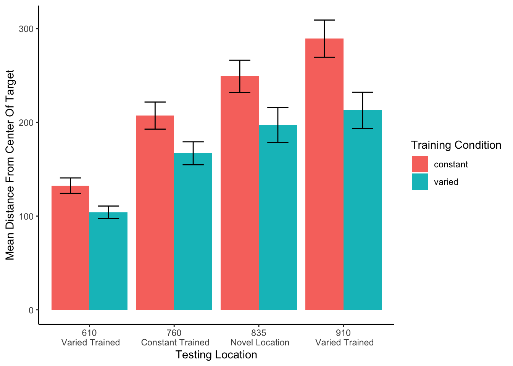
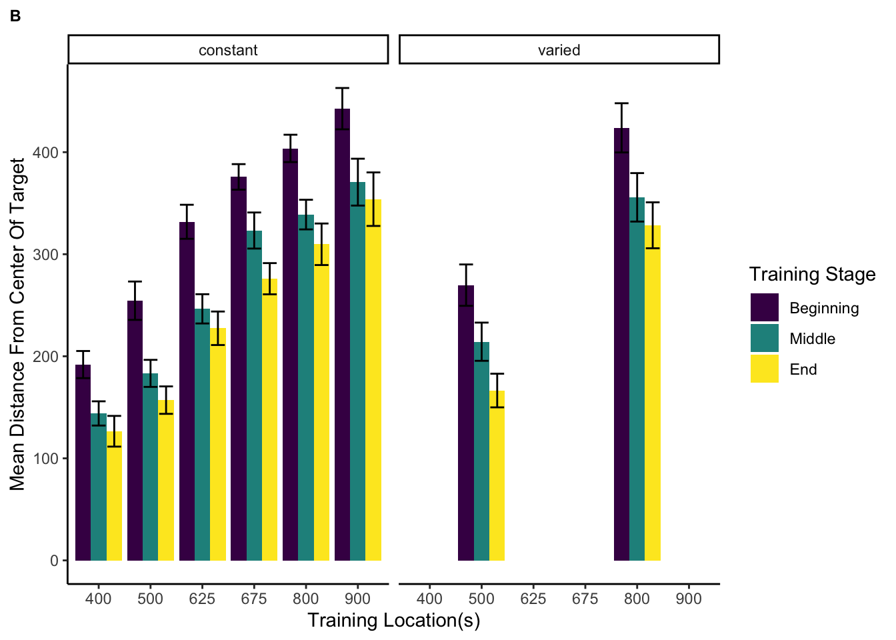
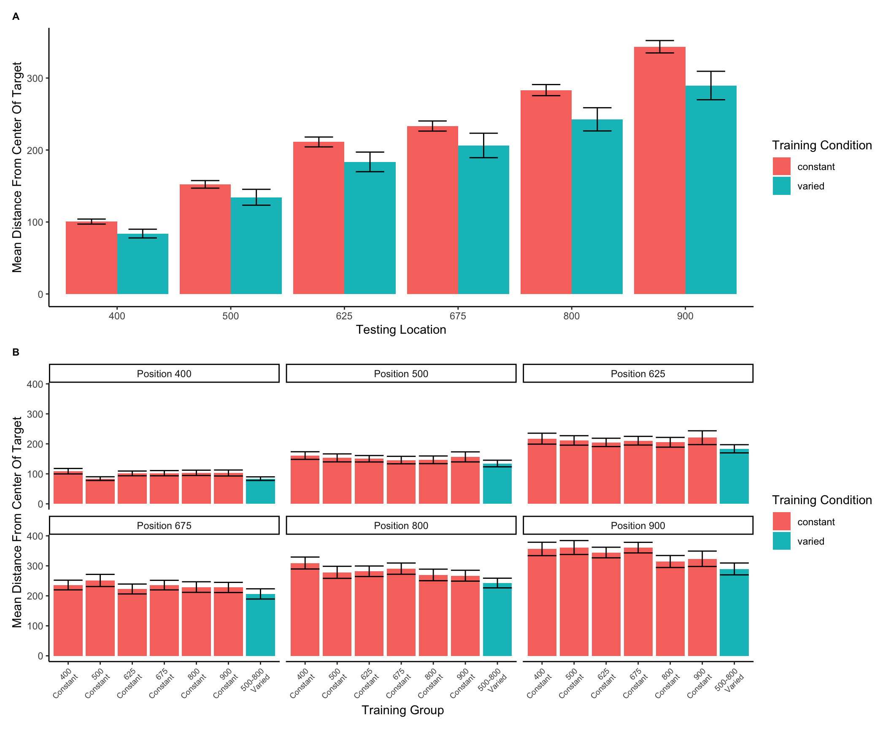
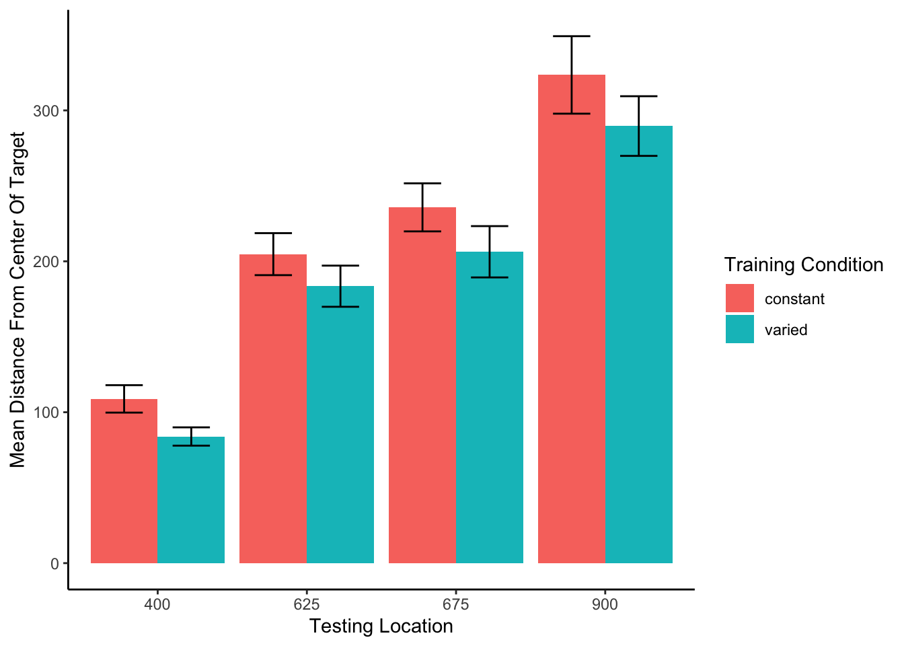
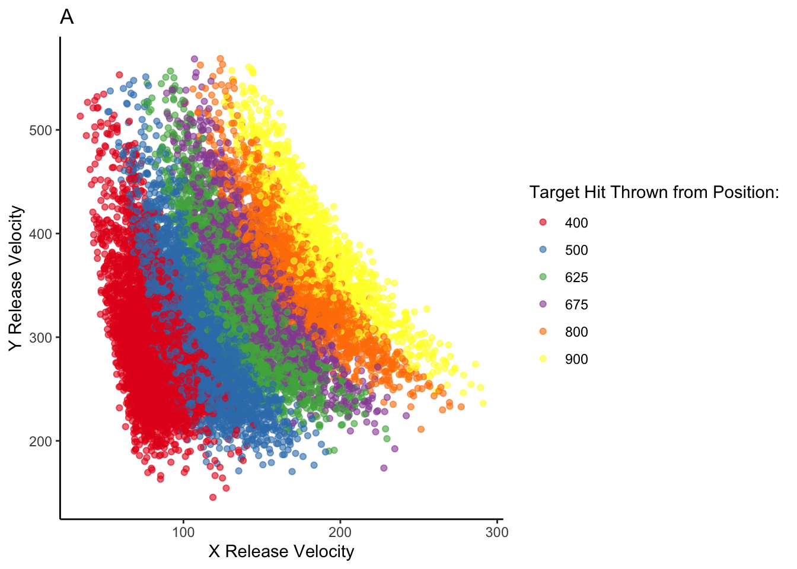
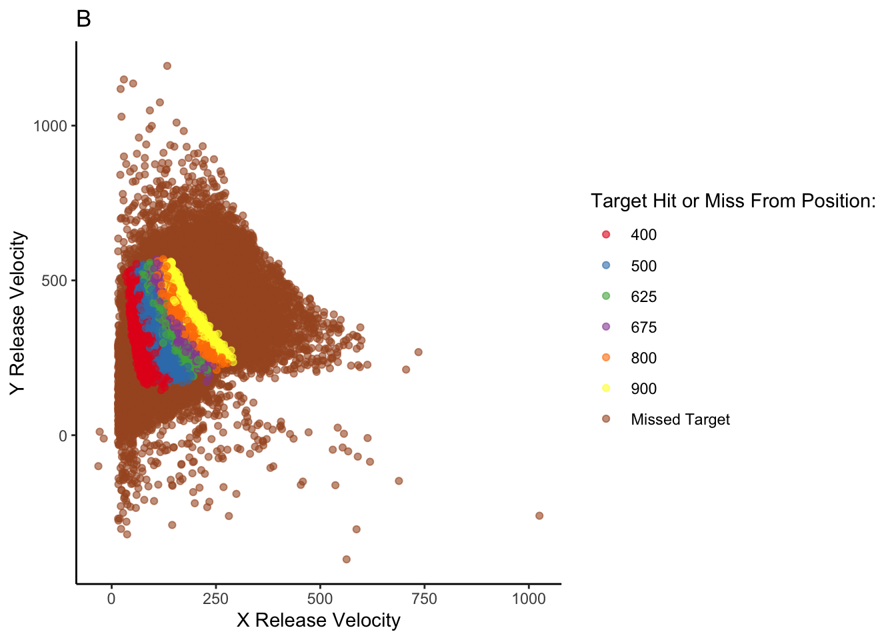

pacman::p_load(tidyr,papaja, knitr, tinytex, RColorBrewer, kableExtra, cowplot, patchwork)source('Functions/IGAS_ProcessFunctions.R')theme_set(theme_classic())# load the processed data from experiment 1 and 2e1 <-readRDS("data/igas_e1_cleanedData-final.rds")%>%mutate(initialVelocityX=X_Velocity,initialVelocityY=Y_Velocity,stageInt=as.numeric(as.character(experimentStage)))e2<-readRDS('data/igas_e2_cleanedData-final.rds')%>%mutate(initialVelocityX=X_Velocity,initialVelocityY=Y_Velocity)# load subject similarity data - computed with the IGAS model in 'IGAS-SimModel.R'e2_sim <-readRDS('data/IGAS_Similarity-Performance.rds')options(contrasts =c("contr.sum", "contr.poly"))defaultContrasts =options()$contraststheme_set(theme_classic())dodge <-position_dodge(width =0.9)e2GrpPos <-c("400","500","625","675","800","900")e2Grp <-paste("Constant","Constant", "Constant","Constant","Constant","Constant", "Varied")e2Labels <-paste(c("400\n Constant","500\n Constant","625\n Constant","675\n Constant","800\n Constant","900\n Constant","500-800\n Varied"),sep="")e1Pos <-c("610","760","835","910")e1Var <-paste("Varied Train Position","Constant Train Position", "Novel Position", "Varied Training Position")e1Labels<-paste(c("610\n Varied Trained","760\n Constant Trained","835\n Novel Location","910\n Varied Trained"),sep="")
Abstract
Exposing learners to variability during training has been demonstrated to improve performance in subsequent transfer testing. Such variability benefits are often accounted for by assuming that learners are developing some general task schema or structure. However much of this research has neglected to account for differences in similarity between varied and constant training conditions. In a between-groups manipulation, we trained participants on a simple projectile launching task, with either varied or constant conditions. We replicate previous findings showing a transfer advantage of varied over constant training. Furthermore, we show that a standard similarity model is insufficient to account for the benefits of variation, but, if the model is adjusted to assume that varied learners are tuned towards a broader generalization gradient, then a similarity-based model is sufficient to explain the observed benefits of variation. Our results therefore suggest that some variability benefits can be accommodated within instance-based models without positing the learning of some schemata or structure.
Introduction
The past century of research on human learning has produced ample evidence that although learners can improve at almost any task, such improvements are often specific to the trained task, with unreliable or even nonexistent transfer to novel tasks or conditions (Barnett & Ceci, 2002; Detterman, 1993). Such transfer challenges are of noteworthy practical relevance, given that educators, trainers, and rehabilitators typically intend for their students to be able to apply what they have learned to new situations. It is therefore important to better understand the factors that influence transfer, and to develop cognitive models that can predict when transfer is likely to occur. The factor of interest to the present investigation is variation during training. Our experiments add to the longstanding empirical investigation of the controversial relationship between training variation, and subsequent transfer. We also offer a novel explanation for such results in the form of an instance-based model that accounts for the benefits of variation in simple terms of psychological similarity. We first review the relevant concepts and literature.
Similarity and instance-based approaches to transfer of learning
Notions of similarity have long played a central role in many prominent models of generalization of learning, as well as in the longstanding theoretical issue of whether learners abstract an aggregate, summary representation, or if they simply store individual instances. Early models of learning often assumed that discrete experiences with some task or category were not stored individually in memory, but instead promoted the formation of a summary representation, often referred to as a prototype or schema, and that exposure to novel examples would then prompt the retrieval of whichever preexisting prototype was most similar (Posner & Keele, 1968). Prototype models were later challenged by the success of instance-based or exemplar models – which were shown to provide an account of generalization as good or better than prototype models, with the advantage of not assuming the explicit construction of an internal prototype (Estes, 1994; Hintzman, 1984; Medin & Schaffer, 1978; Nosofsky, 1986 ). Instance-based models assume that learners encode each experience with a task as a separate instance/exemplar/trace, and that each encoded trace is in turn compared against novel stimuli. As the number of stored instances increases, so does the likelihood that some previously stored instance will be retrieved to aid in the performance of a novel task. Stored instances are retrieved in the context of novel stimuli or tasks if they are sufficiently similar, thus suggesting that the process of computing similarity is of central importance to generalization.
Similarity, defined in this literature as a function of psychological distance between instances or categories, has provided a successful account of generalization across numerous tasks and domains. In an influential study demonstrating an ordinal similarity effect, experimenters employed a numerosity judgment task in which participants quickly report the number of dots flashed on a screen. Performance (in terms of response times to new patterns) on novel dot configurations varied as an inverse function of their similarity to previously trained dot configurations Palmeri (1997). That is, performance was better on novel configurations moderately similar to trained configurations than to configurations with low-similarity, and also better on low-similarity configurations than to even less similar, unrelated configurations. Instance-based approaches have had some success accounting for performance in certain sub-domains of motor learning (Cohen & Rosenbaum, 2004; Crump & Logan, 2010, 2010; Meigh et al., 2018; Poldrack et al., 1999; Wifall et al., 2017) trained participants to type words on an unfamiliar keyboard, while constraining the letters composing the training words to a pre-specified letter set. Following training, typing speed was tested on previously experienced words composed of previously experienced letters; novel words composed of letters from the trained letter set; and novel words composed of letters from an untrained letter set. Consistent with an instance-based account, transfer performance was graded such that participants were fastest at typing the words they had previously trained on, followed by novel words composed of letters they had trained on, and slowest performance for new words composed of untrained letters.
The effect of training variability on transfer
While similarity-based models account for transfer by the degree of similarity between previous and new experiences, a largely separate body of research has focused on improving transfer by manipulating characteristics of the initial training stage. Such characteristics have included training difficulty, spacing, temporal order, feedback schedules, and the primary focus of the current work – variability of training examples.
Training variation has received a particularly large amount of attention within the domain of visuomotor skill learning. Much of this research has been influenced by the work of Schmidt (1975), who proposed a schema-based account of motor learning as an attempt to address the longstanding problem of how novel movements are produced. According to Schema Theory, learners possess general motor programs for classes of movements (e.g. throwing a ball with an underhand movement), as well as schema rules that determine how a motor program is parameterized or scaled for a particular movement. Schema theory predicts that varied training results in the formation of a more general schema-rule, which can allow for transfer to novel movements within a given movement class. Experiments that test this hypothesis are often designed to compare the transfer performance of a constant-trained group against that of a varied-trained group. Both groups train on the same task, but the varied group practices from multiple levels of a task-relevant dimension that remains invariant for the constant group. For example, investigators might train two groups of participants to throw a projectile at a target, with a constant group that throws from a single location, and a varied group that throws from multiple locations. Both groups are then tested from novel locations. Empirically observed benefits of the varied-trained group are then attributed to the variation they received during training, a finding observed in numerous studies (Catalano & Kleiner, 1984; Chua et al., 2019; Goodwin et al., 1998; Kerr & Booth, 1978; Wulf, 1991), and the benefits of this variation are typically thought to be mediated by the development of a more general schema for the throwing motion.
Although the benefits of training variation in visuomotor skill learning have been observed many times, null findings have also been repeatedly found, leading some researchers to question the veracity of the variability of practice hypothesis (Newell, 2003; Van Rossum, 1990). Critics have also pointed out that investigations of the effects of training variability, of the sort described above, often fail to control for the effect of similarity between training and testing conditions. For training tasks in which participants have numerous degrees of freedom (e.g. projectile throwing tasks where participants control the x and y velocity of the projectile), varied groups are likely to experience a wider range of the task space over the course of their training (e.g. more unique combinations of x and y velocities). Experimenters may attempt to account for this possibility by ensuring that the training location(s) of the varied and constant groups are an equal distance away from the eventual transfer locations, such that their training throws are, on average, equally similar to throws that would lead to good performance at the transfer locations. However, even this level of experimental control may still be insufficient to rule out the effect of similarity on transfer. Given that psychological similarity is typically best described as either a Gaussian or exponentially decaying function of psychological distance (Ennis et al., 1988; Ghahramani et al., 1996; Logan, 1988; Nosofsky, 1992; Shepard, 1987; Thoroughman & Taylor, 2005 ), it is plausible that a subset of the most similar training instances could have a disproportionate impact on generalization to transfer conditions, even if the average distance between training and transfer conditions is identical between groups. Figure 1 demonstrates the consequences of a generalization gradient that drops off as a Gaussian function of distance from training, as compared to a linear drop-off.
Figure 1: Left panel- Generalization predicted from a simple model that assumes a linear generalization function. A varied group (red vertical lines indicate the 2 training locations) trained from positions 400 and 800, and a constant group (blue vertical line), trained from position 600. Right panel- if a Gaussian generalization function is assumed, then varied training (400, 800) is predicted to result in better generalization to positions close to 400 and 800 than does constant training at 600. (For interpretation of the references to color in this figure legend, the reader is referred to the web version of this article.)
In addition to largely overlooking the potential for non-linear generalization to confound interpretations of training manipulations, the visuomotor skill learning literature also rarely considers alternatives to schema representations (Chamberlin & Magill, 1992b). Although schema-theory remains influential within certain literatures, instance or exemplar-based models have accounted for human behavior across myriad domains (Jamieson et al., 2022; Logan, 2002). As mentioned above, instance based accounts have been shown to perform well on a variety of different tasks with motoric components (Crump & Logan, 2010; Gandolfo et al., 1996; Meigh et al., 2018; Rosenbaum et al., 1995; van Dam & Ernst, 2015). However, such accounts have received little attention within the subdomain of visuomotor skill learning focused on the benefits of varied training.
The present work examines whether the commonly observed benefits of varied training can be accounted for by between-group differences in similarity between training and testing throws. We first attempt to replicate previous work finding an advantage of varied training over constant training in a projectile launching task. We then examine the extent to which this advantage can be explained by an instance-based similarity model.
Experiment 1
Methods
Sample Size Estimation
To obtain an independent estimate of effect size, we identified previous investigations which included between-subjects contrasts of varied and constant conditions following training on an accuracy based projectile launching task (Chua et al., 2019; Goodwin et al., 1998; Kerr & Booth, 1978; Wulf, 1991). We then averaged effects across these studies, yielding a Cohens f =.43. The GPower 3.1 software package (Faul et al., 2009), 2009) was then used to determine that a power of 80% requires a sample size of at least 23 participants per condition. All experiments reported in the present manuscript exceed this minimum number of participants per condition.
Participants
Participants were recruited from an undergraduate population that is 63% female and consists almost entirely of individuals aged 18-22 years. A total of 110 Indiana University psychology students participated in Experiment 1. We subsequently excluded 34 participants poor performance at one of the dependent measures of the task (2.5-3 standard deviations worse than the median subject at the task) or for displaying a pattern of responses that was clearly indicative of a lack of engagement with the task (e.g. simply dropping the ball on each trial rather than throwing it at the target), or for reporting that they completed the experiment on a phone or tablet device, despite the instructions not to use one of these devices. A total of 74 participants were retained for the final analyses, 35 in the varied group and 39 in the constant group.
Task
The experimental task was programmed in JavaScript, using packages from the Phaser physics engine (https://phaser.io) and the jsPsych library (de Leeuw, 2015). The stimuli, presented on a black background, consisted of a circular blue ball – controlled by the participant via the mouse or trackpad cursor; a rectangular green target; a red rectangular barrier located between the ball and the target; and an orange square within which the participant could control the ball before releasing it in a throw towards the target. Because the task was administered online, the absolute distance between stimuli could vary depending on the size of the computer monitor being used, but the relative distance between the stimuli was held constant. Likewise, the distance between the center of the target, and the training and testing locations was scaled such that relative distances were preserved regardless of screen size. For the sake of brevity, subsequent mentions of this relative distance between stimuli, or the position where the ball landed in relation to the center of the target, will be referred to simply as distance. Figure 2 displays the layout of the task, as it would appear to a participant at the start of a trial, with the ball appearing in the center of the orange square. Using a mouse or trackpad, participants click down on the ball to take control of the ball, connecting the movement of the ball to the movement of the cursor. Participants can then “wind up” the ball by dragging it (within the confines of the orange square) and then launch the ball by releasing the cursor. If the ball does not land on the target, participants are presented with feedback in red text at the top right of the screen, on how many units away they were from the center of the target. If the ball was thrown outside of the boundary of the screen participants are given feedback as to how far away from the target center the ball would have been if it had continued its trajectory. If the ball strikes the barrier (from the side or by landing on top), feedback is presented telling participants to avoid hitting the barrier. If participants drag the ball outside of the orange square before releasing it, the trial terminates, and they are reminded to release the ball within the orange square. If the ball lands on the target, feedback is presented in green text, confirming that the target was hit, and presenting additional feedback on how many units away the ball was from the exact center of the target.
Figure 2: The stimuli of the task consisted of a blue ball, which the participants would launch at the green target, while avoiding the red barrier. On each trial, the ball would appear in the center of the orange square, with the position of the orange square varying between experimental conditions. Participants were constrained to release the ball within the square
Results
Data Processing and Statistical Packages
To prepare the data, we first removed trials that were not easily interpretable as performance indicators in our task. Removed trials included: 1) those in which participants dragged the ball outside of the orange starting box without releasing it, 2) trials in which participants clicked on the ball, and then immediately released it, causing the ball to drop straight down, 3) outlier trials in which the ball was thrown more than 2.5 standard deviations further than the average throw (calculated separately for each throwing position), and 4) trials in which the ball struck the barrier. The primary measure of performance used in all analyses was the absolute distance away from the center of the target. The absolute distance was calculated on every trial, and then averaged within each subject to yield a single performance score, for each position. A consistent pattern across training and testing phases in both experiments was for participants to perform worse from throwing positions further away from the target – a pattern which we refer to as the difficulty of the positions. However, there were no interactions between throwing position and training conditions, allowing us to collapse across positions in cases where contrasts for specific positions were not of interest. All data processing and statistical analyses were performed in R version 4.03 (R Core Team, 2020). ANOVAs for group comparisons were performed using the rstatix package (Kassambara, 2021)****.
Training Phase
Figure 3 below shows aggregate training performance binned into three stages representing the beginning, middle, and end of the training phase. Because the two conditions trained from target distances that were not equally difficult, it was not possible to directly compare performance between conditions in the training phase. Our focus for the training data analysis was instead to establish that participants did improve their performance over the course of training, and to examine whether there was any interaction between training stage and condition. Descriptive statistics for the intermittent testing phase are provided in the supplementary materials.
We performed an ANOVA comparison with stage as a within-group factor and condition as between-group factor. The analysis revealed a significant effect of training stage F(2,142)=62.4, p<.001, \(\eta^{2}_G\) = .17, such that performance improved over the course of training There was no significant effect of condition F(1,71)=1.42, p=.24, \(\eta^{2}_G\) = .02, and no significant interaction between condition and training stage, F(2,142)=.10, p=.91, \(\eta^{2}_G\) < .01.
Figure 3: Training performance for varied and constant participants binned into three stages. Shorter bars indicate better performance (ball landing closer to the center of the target). Error bars indicate standard error of the mean.
Testing Phase
In Experiment 1, a single constant-trained group was compared against a single varied-trained group. At the transfer phase, all participants were tested from 3 positions: 1) the positions(s) from their own training, 2) the training position(s) of the other group, and 3) a position novel to both groups. Overall, group performance was compared with a mixed type III ANOVA, with condition (varied vs. constant) as a between-subject factor and throwing location as a within-subject variable. The effect of throwing position was strong, F(3,213) = 56.12, p<.001, η2G = .23. The effect of training condition was significant F(1,71)=8.19, p<.01, η2G = .07. There was no significant interaction between group and position, F(3,213)=1.81, p=.15, η2G = .01.
Code
exp1.Test <- e1 %>%filter(stage=="Transfer") %>%select(-trainHalf)%>%group_by(positionX) %>%mutate(globalAvg=mean(AbsDistFromCenter),globalSd=sd(AbsDistFromCenter)) %>%group_by(sbjCode,positionX) %>%mutate(scaledDev =scaleVar(globalAvg,globalSd,AbsDistFromCenter)) %>%ungroup() %>%group_by(sbjCode,conditType,positionX,ThrowPosition) %>%summarise(MeanTargetDeviance =mean(AbsDistFromCenter),MeanScaleDev =mean(scaledDev),.groups="keep")%>%as.data.frame()#manuscript plote1test1=exp1.Test %>%ggplot(aes(x=positionX,y=MeanTargetDeviance,group=conditType,fill=conditType))+geom_bar(stat="summary",fun=mean,position=dodge)+stat_summary(fun.data=mean_se,geom="errorbar",position=dodge,width=.5)+ylab("Mean Distance From Center Of Target") +xlab("Testing Location")+theme(plot.title =element_text(hjust =0.5))+guides(fill=guide_legend(title="Training Condition"))+theme(legend.title.align=.25)+scale_x_discrete(name="Testing Location",labels=e1Labels)e1test1

Figure 4: Testing performance for each of the 4 testing positions, compared between training conditions. Positions 610 and 910 were trained on by the varied group, and novel for the constant group. Position 760 was trained on by the constant group, and novel for the varied group. Position 835 was novel for both groups. Shorter bars are indicative of better performance (the ball landing closer to the center of the target). Error bars indicate standard error of the mean.
In Experiment 1, we found that varied training resulted in superior testing performance than constant training, from both a position novel to both groups, and from the position at which the constant group was trained, which was novel to the varied condition. The superiority of varied training over constant training even at the constant training position is of particular note, given that testing at this position should have been highly similar for participants in the constant condition. It should also be noted, though, that testing at the constant trained position is not exactly identical to training from that position, given that the context of testing is different in several ways from that of training, such as the testing trials from the different positions being intermixed, as well as a simple change in context as a function of time. Such contextual differences will be further considered in the General Discussion.
In addition to the variation of throwing position during training, the participants in the varied condition of Experiment 1 also received training practice from the closest/easiest position, as well as from the furthest/most difficult position that would later be encountered by all participants during testing. The varied condition also had the potential advantage of interpolating both of the novel positions from which they would later be tested. Experiment 2 thus sought to address these issues by comparing a varied condition to multiple constant conditions.
Experiment 2
In Experiment 2, we sought to replicate our findings from Experiment 1 with a new sample of participants, while also addressing the possibility of the pattern of results in Experiment 1 being explained by some idiosyncrasy of the particular training location of the constant group relative to the varied group. To this end, Experiment 2 employed the same basic procedure as Experiment 1, but was designed with six separate constant groups each trained from one of six different locations (400, 500, 625, 675, 800, or 900), and a varied group trained from two locations (500 and 800). Participants in all seven groups were then tested from each of the 6 unique positions.
Methods
Participants
A total of 306 Indiana University psychology students participated in Experiment 2, which was also conducted online. As was the case in experiment 1, the undergraduate population from which we recruited participants was 63% female and primarily composed of 18–22-year-old individuals. Using the same procedure as experiment 1, we excluded 98 participants for exceptionally poor performance at one of the dependent measures of the task, or for displaying a pattern of responses indicative of a lack of engagement with the task. A total of 208 participants were included in the final analyses with 31 in the varied group and 32, 28, 37, 25, 29, 26 participants in the constant groups training from location 400, 500, 625, 675, 800, and 900, respectively. All participants were compensated with course credit.
Task and Procedure
The task of Experiment 2 was identical to that of Experiment 1, in all but some minor adjustments to the height of the barrier, and the relative distance between the barrier and the target. Additionally, the intermittent testing trials featured in experiment 1 were not utilized in experiment 2, and all training and testing trials were presented with feedback. An abbreviated demo of the task used for Experiment 2 can be found at (https://pcl.sitehost.iu.edu/tg/demos/igas_expt2_demo.html).
The procedure for Experiment 2 was also quite similar to experiment 1. Participants completed 140 training trials, all of which were from the same position for the constant groups and split evenly (70 trials each - randomized) for the varied group. In the testing phase, participants completed 30 trials from each of the six locations that had been used separately across each of the constant groups during training. Each of the constant groups thus experience one trained location and five novel throwing locations in the testing phase, while the varied group experiences 2 previously trained, and 4 novel locations.
Results
Data Processing and Statistical Packages
After confirming that condition and throwing position did not have any significant interactions, we standardized performance within each position, and then average across position to yield a single performance measure per participant. This standardization did not influence our pattern of results. As in experiment 1, we performed type III ANOVA’s due to our unbalanced design, however the pattern of results presented below is not altered if type 1 or type III tests are used instead. The statistical software for the primary analyses was the same as for experiment 1. Individual learning rates in the testing phase, compared between groups in the supplementary analyses, were fit using the TEfit package in R (Cochrane, 2020).
Training Phase
The different training conditions trained from positions that were not equivalently difficult and are thus not easily amenable to comparison. As previously stated, the primary interest of the training data is confirmation that some learning did occur. ?@fig-e2train depicts the training performance of the varied group alongside that of the aggregate of the six constant groups (5a), and each of the 6 separate constant groups (5b). An ANOVA comparison with training stage (beginning, middle, end) as a within-group factor and group (the varied condition vs. the 6 constant conditions collapsed together) as a between-subject factor revealed no significant effect of group on training performance, F(1,206)=.55,p=.49, \(\eta^{2}_G\) <.01, a significant effect of training stage F(2,412)=77.91, p<.001, \(\eta^{2}_G\) =.05, and no significant interaction between group and training stage, F(2,412)=.489 p=.61, \(\eta^{2}_G\) <.01. We also tested for a difference in training performance between the varied group and the two constant groups that trained matching throwing positions (i.e., the constant groups training from position 500, and position 800). The results of our ANOVA on this limited dataset mirrors that of the full-group analysis, with no significant effect of group F(1,86)=.48, p=.49, \(\eta^{2}_G\) <.01, a significant effect of training stage F(2,172)=56.29, p<.001, \(\eta^{2}_G\) =.11, and no significant interaction between group and training stage, F(2,172)=.341 p=.71, \(\eta^{2}_G\) <.01.
Code
e2$stage <-factor(e2$stage, levels =c("Beginning", "Middle", "End","Transfer"),ordered =TRUE)exp2TrainPosition <- e2 %>%filter(stage!="Transfer") %>%ungroup() %>%group_by(sbjCode,Group2,conditType,trainHalf,positionX) %>%summarise(MeanTargetDistance=mean(AbsDistFromCenter))%>%as.data.frame()exp2TrainPosition3 <- e2 %>%filter(stage!="Transfer") %>%ungroup() %>%mutate(globalAvg=mean(AbsDistFromCenter),globalSd=sd(AbsDistFromCenter)) %>%group_by(sbjCode,positionX) %>%mutate(scaledDev =scaleVar(globalAvg,globalSd,AbsDistFromCenter)) %>%ungroup() %>%group_by(sbjCode,Group2,conditType,stage,positionX) %>%summarise(MeanTargetDistance=mean(AbsDistFromCenter),MeanScaledDev=mean(scaledDev,trim=.05))%>%as.data.frame()exp2Train <- e2 %>%filter(stage!="Transfer") %>%group_by(sbjCode,Group2,conditType,trainHalf) %>%summarise(MeanTargetDistance=mean(AbsDistFromCenter)) %>%as.data.frame()exp2Train3 <- e2 %>%filter(stage!="Transfer") %>%ungroup() %>%mutate(globalAvg=mean(AbsDistFromCenter),globalSd=sd(AbsDistFromCenter)) %>%group_by(sbjCode,positionX) %>%mutate(scaledDev =scaleVar(globalAvg,globalSd,AbsDistFromCenter)) %>%ungroup() %>%group_by(sbjCode,Group2,conditType,stage) %>%summarise(MeanTargetDistance=mean(AbsDistFromCenter),MeanScaledDev=mean(scaledDev,trim=.05)) %>%as.data.frame()transfer <-filter(e2, stage=="Transfer") %>%droplevels() %>%select(-trainHalf,-initialVelocityY,ThrowPosition2)%>%ungroup()transfer <- transfer %>%group_by(positionX) %>%mutate(globalAvg=mean(AbsDistFromCenter),globalSd=sd(AbsDistFromCenter)) %>%group_by(sbjCode,positionX) %>%mutate(scaledDev =scaleVar(globalAvg,globalSd,AbsDistFromCenter)) %>%ungroup()transfer <- transfer %>%group_by(sbjCode,positionX) %>%mutate(ind=1,testPosIndex=cumsum(ind),posN=max(testPosIndex)) %>%select(-ind) %>%mutate(testHalf =case_when(testPosIndex<15~"1st Half",testPosIndex>=15~"2nd Half")) %>%convert_as_factor(testHalf)variedTest <- transfer %>%filter(condit==7) %>%mutate(extrapolate=ifelse(positionX=="900"| positionX=="400","extrapolation","interpolation")) constantTest <- transfer %>%filter(condit!=7) %>%mutate(extrapolate=ifelse(distFromTrain==0,"interpolation","extrapolation"))transfer <-rbind(variedTest,constantTest)transfer<- transfer %>%mutate(novel=ifelse(distFromTrain3==0,"trainedLocation","novelLocation"))%>%convert_as_factor(novel,extrapolate)transfer <- transfer %>%relocate(sbjCode,condit2,Group,conditType2,stage,trial,novel,extrapolate,positionX,AbsDistFromCenter,globalAvg,globalSd,scaledDev,distFromTrain3) %>%ungroup()# novelAll <- transfer %>% filter(distFromTrain!=0, distFromTrain3!=0) %>% select(-globalAvg,-globalSd,-scaledDev)%>% droplevels() %>% ungroup()# novelAll <- novelAll %>% group_by(positionX) %>%# mutate(globalAvg=mean(AbsDistFromCenter),globalSd=sd(AbsDistFromCenter)) %>% # group_by(sbjCode,positionX) %>% mutate(scaledDev = scaleVar(globalAvg,globalSd,AbsDistFromCenter)) %>%ungroup()novelAll <- transfer %>%filter(distFromTrain!=0, distFromTrain3!=0)novelAllMatched <- novelAll %>%filter(condit!=5,condit!=2)constantIden <- transfer %>%filter(condit !=7,distFromTrain==0) # only constant groups from their training positionvariedTest <- transfer %>%filter(condit==7) # only varied testingvariedVsIden <-rbind(constantIden,variedTest) # all varied combined with constant identityvariedNovel <- variedTest %>%filter(distFromTrain3 !=0) # removes 500 and 800 from variedconstantIden2 <- transfer %>%filter(condit !=7,condit!=5,condit!=2,distFromTrain==0) # only constant groups from training position 400,625,675,900variedVsNovelIden <-rbind(constantIden2,variedNovel) # novel positions for varied, trained for constantexp2.Test <- transfer %>%group_by(sbjCode,conditType,positionX,ThrowPosition)%>%summarise(MeanTargetDeviance =mean(AbsDistFromCenter,trim=.05),MeanScaledDev=mean(scaledDev,trim=.05)) %>%ungroup() %>%as.data.frame()exp2.Test2 <- exp2.Test %>%group_by(sbjCode,conditType)%>%summarise(MeanTargetDeviance =mean(MeanTargetDeviance),MeanScaledDev=mean(MeanScaledDev)) %>%ungroup() %>%as.data.frame()exp2.Test7 <- transfer %>%group_by(Group2,sbjCode,positionX,Group,conditType,ThrowPosition4) %>%summarise(MeanTargetDeviance =mean(AbsDistFromCenter,trim=.05),MeanScaledDev=mean(scaledDev,trim=.05)) %>%as.data.frame()exp2.Test7.agg <- exp2.Test7 %>%group_by(Group2,sbjCode,Group,conditType) %>%summarise(MeanTargetDeviance =mean(MeanTargetDeviance),MeanScaledDev=mean(MeanScaledDev)) %>%as.data.frame()exp2.Test7.agg2 <- exp2.Test7 %>%group_by(sbjCode,conditType) %>%summarise(MeanTargetDeviance =mean(MeanTargetDeviance),MeanScaledDev=mean(MeanScaledDev)) %>%as.data.frame()
Code
### New - 3 stagee2train1<-exp2TrainPosition3 %>%ggplot(aes(x=stage,y=MeanTargetDistance))+geom_bar(aes(group=stage,fill=stage),stat="summary",position=dodge,fun="mean")+stat_summary(aes(x=stage,group=stage),fun.data=mean_se,geom="errorbar",position=dodge,width=.8)+facet_wrap(~conditType,ncol=2)+ylab("Mean Distance From Center Of Target") +xlab("Training Stage")+theme(plot.title =element_text(face="bold",hjust =0.0,size=9),plot.title.position ="plot")+guides(fill=guide_legend(title="Training Stage"))+theme(legend.title.align=.25)+ggtitle("A")e2train2<-exp2TrainPosition3 %>%ggplot(aes(x=positionX,y=MeanTargetDistance))+geom_bar(aes(group=stage,fill=stage),stat="summary",position=dodge,fun="mean")+facet_wrap(~conditType,ncol=2)+stat_summary(aes(x=positionX,group=stage),fun.data=mean_se,geom="errorbar",position=dodge,width=.8)+ylab("Mean Distance From Center Of Target") +xlab("Training Location(s)")+theme(plot.title =element_text(face="bold",hjust =0,size=9),plot.title.position ="plot")+guides(fill=guide_legend(title="Training Stage"))+theme(legend.title.align=.25)+ggtitle("B")#plot_grid(e2train1,e2train2,ncol=1)e2train1e2train2
Figure 5: Training performance for the six constant conditions, and the varied condition, binned into three stages. On the left side, the six constant groups are averaged together, as are the two training positions for the varied group. On the right side, the six constant groups are shown separately, with each set of bars representing the beginning, middle, and end of training for a single constant group that trained from the position indicated on the x-axis. Figure 5b also shows training performance separately for both of the throwing locations trained by the varied group. Error bars indicate standard error of the mean.

Figure 6: Training performance for the six constant conditions, and the varied condition, binned into three stages. On the left side, the six constant groups are averaged together, as are the two training positions for the varied group. On the right side, the six constant groups are shown separately, with each set of bars representing the beginning, middle, and end of training for a single constant group that trained from the position indicated on the x-axis. Figure 5b also shows training performance separately for both of the throwing locations trained by the varied group. Error bars indicate standard error of the mean.
Testing Phase
In Experiment 2, a single varied condition (trained from two positions, 500 and 800), was compared against six separate constant groups (trained from a single position, 400, 500, 625, 675, 800 or 900). For the testing phase, all participants were tested from all six positions, four of which were novel for the varied condition, and five of which were novel for each of the constant groups. For a general comparison, we took the absolute deviations for each throwing position and computed standardized scores across all participants, and then averaged across throwing position. The six constant groups were then collapsed together allowing us to make a simple comparison between training conditions (constant vs. varied). A type III between-subjects ANOVA was performed, yielding a significant effect of condition F(1,206)=4.33, p=.039, \(\eta^{2}_G\) =.02. Descriptive statistics for each condition are shown in table 2. In Figure 7 visualizes the consistent advantage of the varied condition over the constant groups across the testing positions. Figure 7 shows performance between the varied condition and the individual constant groups.
Code
# manuscript plote2test1<-exp2.Test %>%ggplot(aes(x=ThrowPosition,y=MeanTargetDeviance,group=conditType,fill=conditType))+geom_bar(stat="summary",position=dodge,fun="mean")+stat_summary(fun.data=mean_se,geom="errorbar",position=dodge,width=.5)+ylab("Mean Distance From Center Of Target") +xlab("Testing Location")+guides(fill=guide_legend(title="Training Condition"))+theme(plot.title=element_text(face="bold",size=9),plot.title.position ="plot",legend.title.align=.25)+ggtitle("A")e2test2<-exp2.Test7 %>%ggplot(aes(x=Group,y=MeanTargetDeviance,group=conditType,fill=conditType))+geom_bar(stat="summary",position=position_dodge(),fun="mean")+stat_summary(fun.data=mean_se,geom="errorbar",position=position_dodge())+facet_wrap(~ThrowPosition4)+ylab("Mean Distance From Center Of Target")+guides(fill=guide_legend(title="Training Condition"))+theme(plot.title=element_text(face="bold",size=9),plot.title.position ="plot",legend.title.align=.25,axis.text.x =element_text(size =7,angle=45,hjust=1))+scale_x_discrete(name=" Training Group",labels=e2Labels)+ggtitle("B")e2test1 / e2test2

Figure 7: Testing phase performance from each of the six testing positions. The six constant conditions are averaged together into a single constant group, compared against the single varied-trained group.B) Transfer performance from each of the 6 throwing locations from which all participants were tested. Each bar represents performance from one of seven distinct training groups (six constant groups in red, one varied group in blue). The x axis labels indicate the location(s) from which each group trained. Lower values along the y axis reflect better performance at the task (closer distance to target center). Error bars indicate standard error of the mean.
Table 1: Transfer performance from each of the 6 throwing locations from which all participants were tested. Each bar represents performance from one of seven distinct training groups (six constant groups in red, one varied group in blue). The x axis labels indicate the location(s) from which each group trained. Lower values along the y axis reflect better performance at the task (closer distance to target center). Error bars indicate standard error of the mean.
Position
Constant
Varied
400
100.59(46.3)
83.92(33.76)
500
152.28(69.82)
134.38(61.38)
625
211.21(90.95)
183.51(75.92)
675
233.32(93.35)
206.32(94.64)
800
283.24(102.85)
242.65(89.73)
900
343.51(114.33)
289.62(110.07)
Next, we compared the testing performance of constant and varied groups from only positions that participants had not encountered during training. Constant participants each had 5 novel positions, whereas varied participants tested from 4 novel positions (400,625,675,900). We first standardized performance within in each position, and then averaged across positions. Here again, we found a significant effect of condition (constant vs. varied): F(1,206)=4.30, p=.039, \(\eta^{2}_G\) = .02 .
Table 2: Testing performance from novel positions. Includes data only from positions that were not encountered during the training stage (e.g. excludes positions 500 and 800 for the varied group, and one of the six locations for each of the constant groups). Table presents Mean absolute deviations from the center of the target, and standard deviations in parenthesis.
Position
Constant
Varied
400
98.84(45.31)
83.92(33.76)
500
152.12(69.94)
NA
625
212.91(92.76)
183.51(75.92)
675
232.9(95.53)
206.32(94.64)
800
285.91(102.81)
NA
900
346.96(111.35)
289.62(110.07)
Finally, corresponding to the comparison of position 760 from experiment 1, we compared the test performance of the varied group against the constant group from only the positions that the constant groups trained. Such positions were novel to the varied group (thus this analysis omitted two constant groups that trained from positions 500 or 800 as those positions were not novel to the varied group). Figure 8 displays the particular subset of comparisons utilized for this analysis. Again, we standardized performance within each position before performing the analyses on the aggregated data. In this case, the effect of condition did not reach statistical significance F(1,149)=3.14, p=.079, \(\eta^{2}_G\) = .02. Table 4 provides descriptive statistics.
Code
sum.variedVsNovelIden <- variedVsNovelIden %>%group_by(sbjCode,conditType,positionX) %>%summarise(MeanTargetDev=mean(AbsDistFromCenter,trim=.05),MeanScaledDev=mean(scaledDev,trim=.05),.groups="keep") %>%as.data.frame()e2Test2 <- sum.variedVsNovelIden %>%ggplot(aes(x=positionX,y=MeanTargetDev,group=conditType,fill=conditType))+geom_bar(stat="summary",position=dodge,fun="mean")+stat_summary(fun.data=mean_se,geom="errorbar",position=dodge,width=.5)+ylab("Mean Distance From Center Of Target") +xlab("Testing Location")+theme(plot.title =element_text(hjust =0.5))+guides(fill=guide_legend(title="Training Condition"))+theme(legend.title.align=.25)e2Test2

Figure 8: A comparison of throwing location that are identical to those trained by the constant participants (e.g. constant participants trained at position 900, tested from position 900), which are also novel to the varied-trained participants (thus excluding positions 500 and 800). Error bars indicate standard error of the mean.
Table 3: Testing performance from the locations trained by constant participants and novel to varied participants. Locations 500 and 800 are not included as these were trained by the varied participants. Table presents Mean absolute deviation from the center of the target, and standard deviations in parenthesis.
Position
Constant
Varied
400
108.85(50.63)
83.92(33.76)
625
204.75(84.66)
183.51(75.92)
675
235.75(81.15)
206.32(94.64)
900
323.5(130.9)
289.62(110.07)
Discussion
The results of experiment 2 largely conform to the findings of experiment 1. Participants in both varied and constant conditions improved at the task during the training phase. We did not observe the common finding of training under varied conditions producing worse performance during acquisition than training under constant conditions (Catalano & Kleiner, 1984; Wrisberg et al., 1987), which has been suggested to relate to the subsequent benefits of varied training in retention and generalization testing (Soderstrom & Bjork, 2015). However our finding of no difference in training performance between constant and varied groups has been observed in previous work (Chua et al., 2019; Moxley, 1979; Pigott & Shapiro, 1984).
In the testing phase, our varied group significantly outperformed the constant conditions in both a general comparison, and in an analysis limited to novel throwing positions. The observed benefit of varied over constant training echoes the findings of many previous visuomotor skill learning studies that have continued to emerge since the introduction of Schmidt’s influential Schema Theory (Catalano & Kleiner, 1984; Chua et al., 2019; Goodwin et al., 1998; McCracken & Stelmach, 1977; Moxley, 1979; Newell & Shapiro, 1976; Pigott & Shapiro, 1984; Roller et al., 2001; Schmidt, 1975; Willey & Liu, 2018b; Wrisberg et al., 1987; Wulf, 1991). We also join a much smaller set of research to observe this pattern in a computerized task (Seow et al., 2019). One departure from the experiment 1 findings concerns the pattern wherein the varied group outperformed the constant group even from the training position of the constant group, which was significant in experiment 1, but did not reach significance in experiment 2. Although this pattern has been observed elsewhere in the literature (Goode et al., 2008; Kerr & Booth, 1978), the overall evidence for this effect appears to be far weaker than for the more general benefit of varied training in conditions novel to all training groups.
Computational Model
Controlling for the similarity between training and testing The primary goal of Experiment 2 was to examine whether the benefits of variability would persist after accounting for individual differences in the similarity between trained and tested throwing locations. To this end, we modelled each throw as a two-dimensional point in the space of x and y velocities applied to the projectile at the moment of release. For each participant, we took each individual training throw, and computed the similarity between that throw and the entire population of throws within the solution space for each of the 6 testing positions. We defined the solution space empirically as the set of all combinations of x and y throw velocities that resulted in hitting the target. We then summed each of the trial-level similarities to produce a single similarity for each testing position score relating how the participant threw the ball during training and the solutions that would result in target hits from each of the six testing positions – thus resulting in six separate similarity scores for each participant. ?@fig-taskSpace visualizes the solution space for each location and illustrates how different combinations of x and y velocity result in successfully striking the target from different launching positions. As illustrated in ?@fig-taskSpace, the solution throws represent just a small fraction of the entire space of velocity combinations used by participants throughout the experiment.
Code
taskspace <- e2 %>%filter(AbsDistFromCenter<900)taskspace$hitOrMiss <-ifelse(taskspace$trialType==11,"Hit Target","Missed Target")solSpace <- e2 %>%filter(trialType==11)#solSpace %>% ggplot(aes(x=X_Velocity,y=Y_Velocity)) + geom_point(aes(colour=ThrowPosition),alpha=0.58) + ggtitle("") solSpace$Result =ifelse(solSpace$ThrowPosition==400,"400",solSpace$ThrowPosition)solSpace$Result =ifelse(solSpace$ThrowPosition==500,"500",solSpace$Result)solSpace$Result=ifelse(solSpace$ThrowPosition==625,"625",solSpace$Result)solSpace$Result =ifelse(solSpace$ThrowPosition==675,"675",solSpace$Result)solSpace$Result =ifelse(solSpace$ThrowPosition==800,"800",solSpace$Result)solSpace$Result =ifelse(solSpace$ThrowPosition==900,"900",solSpace$Result)missSpace <- e2 %>%filter(trialType !=11)missSpace$Result ="Missed Target"solSpace$Result <- solSpace$Result# the usual method of changing the legend title does not seem to work after the colours are manually scaled. # multiplied velocoties by -1 to make the axes less confusingss=solSpace %>%ggplot(aes(x=X_Velocity*-1,y=Y_Velocity*-1)) +geom_point(aes(colour=Result),alpha=0.6) +scale_color_manual(values =brewer.pal(n=6,name="Set1"))+labs(colour="Target Hit Thrown from Position:") +xlab("X Release Velocity") +ylab("Y Release Velocity")+ggtitle("A")fullSpace <-rbind(missSpace,solSpace)fs<- fullSpace %>%ggplot(aes(x=X_Velocity*-1,y=Y_Velocity*-1,colour=Result)) +geom_point(aes(),alpha=0.6) +scale_color_manual(values =brewer.pal(n=7,name="Set1"))+labs(colour="Target Hit or Miss From Position:") +xlab("X Release Velocity") +ylab("Y Release Velocity") +ggtitle("B")ssfs

Figure 9: A visual representation of the combinations of throw parameters (x and y velocities applied to the ball at launch), which resulted in target hits during the testing phase. This empirical solution space was compiled from all of the participants in experiment 2. Figure 8B shows the solution space within the context of all of the throws made throughout the testing phase of the experiment.

Figure 10: A visual representation of the combinations of throw parameters (x and y velocities applied to the ball at launch), which resulted in target hits during the testing phase. This empirical solution space was compiled from all of the participants in experiment 2. Figure 8B shows the solution space within the context of all of the throws made throughout the testing phase of the experiment.
For each individual trial, the Euclidean distance (Equation 1) was computed between the velocity components (x and y) of that trial and the velocity components of each individual solution throw for each of the 6 positions from which participants would be tested in the final phase of the study. The P parameter in Equation 1 is set equal to 2, reflecting a Gaussian similarity gradient. Then, as per an instance-based model of similarity (Logan, 2002; Nosofsky, 1992), these distances were multiplied by a sensitivity parameter, c, and then exponentiated to yield a similarity value. The parameter c controls the rate with which similarity-based generalization drops off as the Euclidean distance between two throws in x- and y-velocity space increases. If c has a large value, then even a small difference between two throws’ velocities greatly decreases the extent of generalization from one to the other. A small value for c produces broad generalization from one throw to another despite relatively large differences in their velocities. The similarity values for each training individual throw made by a given participant were then summed to yield a final similarity score, with a separate score computed for each of the 6 testing positions. The final similarity score is construable as index of how accurate the throws a participant made during the training phase would be for each of the testing positions.
A simple linear regression revealed that these similarity scores were significantly predictive of performance in the transfer stage, t =-15.88, p<.01, \(r^2\)=.17, such that greater similarity between training throws and solution spaces for each of the test locations resulted in better performance. We then repeated the group comparisons above while including similarity as a covariate in the model. Comparing the varied and constant groups in testing performance from all testing positions yielded a significant effect of similarity, F(1, 205)=85.66, p<.001, \(\eta^{2}_G\) =.29, and also a significant effect of condition (varied vs. constant), F(1, 205)=6.03, p=.015, \(\eta^{2}_G\) =.03. The group comparison limited to only novel locations for the varied group pit against trained location for the constant group resulted in a significant effect of similarity, F(1,148)=31.12, p<.001, \(\eta^{2}_G\) =.18 as well as for condition F(1,148)=11.55, p<.001, \(\eta^{2}_G\) =.07. For all comparisons, the pattern of results was consistent with the initial findings from experiment 2, with the varied group still performing significantly better than the constant group.
Fitting model parameters separately by group
To directly control for similarity in Experiment 2, we developed a model-based measure of the similarity between training throws and testing conditions. This similarity measure was a significant predictor of testing performance, e.g., participants whose training throws were more similar to throws that resulted in target hits from the testing positions, tended to perform better during the testing phase. Importantly, the similarity measure did not explain away the group-level benefits of varied training, which remained significant in our linear model predicting testing performance after similarity was added to the model. However, previous research has suggested that participants may differ in their level of generalization as a function of prior experience, and that such differences in generalization gradients can be captured by fitting the generalization parameter of an instance-based model separately to each group (Hahn et al., 2005; Lamberts, 1994). Relatedly, the influential Bayesian generalization model developed by Tenenbaum & Griffiths (2001) predicts that the breadth of generalization will increase when a rational agent encounters a wider variety of examples. Following these leads, we assume that in addition to learning the task itself, participants are also adjusting how generalizable their experience should be. Varied versus constant participants may be expected to learn to generalize their experience to different degrees. To accommodate this difference, the generalization parameter of the instance-based model (in the present case, the c parameter) can be allowed to vary between the two groups to reflect the tendency of learners to adaptively tune the extent of their generalization. One specific hypothesis is that people adaptively set a value of c to fit the variability of their training experience (Nosofsky & Johansen, 2000; Sakamoto et al., 2006). If one’s training experience is relatively variable, as with the variable training condition, then one might infer that future test situations will also be variable, in which case a low value of c will allow better generalization because generalization will drop off slowly with training-to-testing distance. Conversely, if one’s training experience has little variability, as found in the constant training conditions, then one might adopt a high value of c so that generalization falls off rapidly away from the trained positions.
To address this possibility, we compared the original instance-based model of similarity fit against a modified model which separately fits the generalization parameter, c, to varied and constant participants. To perform this parameter fitting, we used the optim function in R, and fit the model to find the c value(s) that maximized the correlation between similarity and testing performance.
Both models generate distinct similarity values between training and testing locations. Much like the analyses in Experiment 2, these similarity values are regressed against testing performance in models of the form shown below. As was the case previously, testing performance is defined as the mean absolute distance from the center of the target (with a separate score for each participant, from each position).
Linear models 1 and 3 both show that similarity is a significant predictor of testing performance (p<.01). Of greater interest is the difference between linear model 2, in which similarity is computed from a single c value fit from all participants (Similarity1c), with linear model 4, which fits the c parameter separately between groups (Similarity2c). In linear model 2, the effect of training group remains significant when controlling for Similarity1c (p<.01), with the varied group still performing significantly better. However, in linear model 4 the addition of the Similarity2c predictor results in the effect of training group becoming nonsignificant (p=.40), suggesting that the effect of varied vs. constant training is accounted for by the Similarity2c predictor. Next, to further establish a difference between the models, we performed nested model comparisons using ANOVA, to see if the addition of the training group parameter led to a significant improvement in model performance. In the first comparison, ANOVA(Linear Model 1, Linear Model 2), the addition of the training group predictor significantly improved the performance of the model (F=22.07, p<.01). However, in the second model comparison, ANOVA (Linear model 3, Linear Model 4) found no improvement in model performance with the addition of the training group predictor (F=1.61, p=.20).
Finally, we sought to confirm that similarity values generated from the adjusted Similarity2c model had more predictive power than those generated from the original Similarity1c model. Using the BIC function in R, we compared BIC values between linear model 1 (BIC=14604.00) and linear model 3 (BIC = 14587.64). The lower BIC value of model 3 suggests a modest advantage for predicting performance using a similarity measure computed with two c values over similarity computed with a single c value. When fit with separate c values, the best fitting c parameters for the model consistently optimized such that the c value for the varied group (c=.00008) was smaller in magnitude than the c value for the constant group(c= .00011). Recall that similarity decreases as a Gaussian function of distance (equation 1 above), and a smaller value of c will result in a more gradual drop-off in similarity as the distance between training throws and testing solutions increases.
In summary, our modeling suggests that an instance-based model which assumes equivalent generalization gradients between constant and varied trained participants is unable to account for the extent of benefits of varied over constant training observed at testing. The evidence for this in the comparative model fits is that when a varied/constant dummy-coded variable for condition is explicitly added to the model, the variable adds a significant contribution to the prediction of test performance, with the variable condition yielding better performance than the constant conditions. However, if the instance-based generalization model is modified to assume that the training groups can differ in the steepness of their generalization gradient, by incorporating a separate generalization parameter for each group, then the instance-based model can account for our experimental results without explicitly taking training group into account. Henceforth this model will be referred to as the Instance-based Generalization with Adaptive Similarity (IGAS) model.
General Discussion
Across two experiments, we found evidence in support of the benefits of variability hypothesis in a simple, computerized projectile throwing task. Generalization was observed in both constant and varied participants, in that both groups tended to perform better at novel positions in the testing phase than did participants who started with those positions in the training phase. However, varied trained participants consistently performed better than constant trained participants, in terms of both the testing phase in general, and in a comparison that only included untrained positions. We also found some evidence for the less commonly observed pattern wherein varied-trained participants outperform constant-trained participants even from conditions identical to the constant group training (Goode et al., 2008; Green et al., 1995; Kerr & Booth, 1978). In experiment 1 varied participants performed significantly better on this identity comparison. In Experiment 2, the comparison was not significant initially, but became significant after controlling for the similarity measure that incorporates only a single value for the steepness of similarity-based generalization (c). Furthermore, we showed that the general pattern of results from Experiment 2 could be parsimoniously accommodated by an instance-based similarity model, but only with the assumption that constant and varied participants generalize their training experience to different degrees. Our results thus suggest that the benefits of variation cannot be explained by the varied-trained participants simply covering a broader range of the task space. Rather, the modeling suggests that varied participants also learn to adaptively tune their generalization function such that throwing locations generalize more broadly to one another than they do in the constant condition. A learning system could end up adopting a higher c value in the constant than variable training conditions by monitoring the trial-by-trial variability of the training items. The c parameter would be adapted downwards when adjacent training items are dissimilar to each other and adapted upwards when adjacent training items are the same. In this fashion, contextually appropriate c values could be empirically learned. This learning procedure would capture the insight that if a situation has a high amount variability, then the learner should be predisposed toward thinking that subsequent test items will also show considerable variability, in which case generalization gradients should be broad, as is achieved by low values for c.
Also of interest is whether the IGAS model can predict the pattern of results wherein the varied condition outperforms the constant condition even from the position on which the constant condition trained. Although our models were fit using all of the Experiment 2 training and testing data, not just that of the identity comparisons, in Figure 11 we demonstrate how a simplified version of the IGAS model could in principle produce such a pattern. In addition to the assumption of differential generalization between varied and constant conditions, our simplified model makes explicit an assumption that is incorporated into the full IGAS model – namely that even when being tested from a position identical to that which was trained, there are always some psychological contextual differences between training and testing throws, resulting in a non-zero dissimilarity.
Figure 11: A simple model depicting the necessity of both of two separately fit generalization parameters, c, and a positive distance between training and testing contexts, in order for an instance model to predict a pattern of varied training from stimuli 400 and 800 outperforming constant training from position 600 at a test position of 600. For the top left panel, in which the generalization model assumes a single c value (-.008) for both varied and constant conditions, and identical contexts across training and testing, the equation which generates the varied condition is - Amount of Generalization = \(e^{(c\\cdot|x-800|)} +e^{(c\\cdot|x-400|)}\), whereas the constant group generalization is generated from \(2\\cdot e^{(c\\cdot|x-600|)}\). For the top right panel, the c constants in the original equations are different for the 2 conditions, with \(c=-.002\) for the varied condition, and \(c=-.008\) for the constant condition. The bottom two panels are generated from identical equations to those immediately above, except for the addition of extra distance (100 units) to reflect the assumption of some change in context between training and testing conditions. Thus, the generalization model for the varied condition in the bottom-right panel is of the form - Amount of Generalization = \(e^{(cvaried\\cdot|x-800|)} +e^{(cvaried\\cdot|x-400|)}\).
As mentioned above, the idea that learners flexibly adjust their generalization gradient based on prior experience does have precedent in the domains of category learning (Aha & Goldstone, 1992; Briscoe & Feldman, 2011; Hahn et al., 2005; Lamberts, 1994; Op de Beeck et al., 2008), and sensorimotor adaptation (Marongelli & Thoroughman, 2013; Taylor & Ivry, 2013; Thoroughman & Taylor, 2005). Lamberts (1994) showed that a simple manipulation of background knowledge during a categorization test resulted in participants generalizing their training experience more or less broadly, and moreover that such a pattern could be captured by allowing the generalization parameter of an instance-based similarity model to be fit separately between conditions. The flexible generalization parameter has also successfully accounted for generalization behavior in cases where participants have been trained on categories that differ in their relative variability (Hahn et al., 2005; Sakamoto et al., 2006). However, to the best of our knowledge, IGAS is the first instance-based similarity model that has been put forward to account for the effect of varied training in a visuomotor skill task. Although IGAS was inspired by work in the domain of category learning, its success in a distinct domain may not be surprising in light of the numerous prior observations that at least certain aspects of learning and generalization may operate under common principles across different tasks and domains (Censor et al., 2012; Hills et al., 2010; Jamieson et al., 2022; Law & Gold, 2010; Roark et al., 2021; Vigo et al., 2018; Wall et al., 2021; Wu et al., 2020; Yang et al., 2020; rosenbaumAcquisitionIntellectualPerceptualMotor2001a?).
Our modelling approach does differ from category learning implementations of instance-based models in several ways. One such difference is the nature of the training instances that are assumed to be stored. In category learning studies, instances are represented as points in a multidimensional space of all of the attributes that define a category item (e.g. size/color/shape). Rather than defining instances in terms of what stimuli learners experience, our approach assumes that stored, motor instances reflect how they act, in terms of the velocity applied to the ball on each throw. An advantage of many motor learning tasks is the relative ease with which task execution variables can be directly measured (e.g. movement force, velocity, angle, posture) in addition to the decision and response time measures that typically exhaust the data generated from more classical cognitive tasks. Of course, whether learners actually are storing each individual motor instance is a fundamental question beyond the scope of the current work – though as described in the introduction there is some evidence in support of this idea (Chamberlin & Magill, 1992a; Crump & Logan, 2010; Hommel, 1998; Meigh et al., 2018; Poldrack et al., 1999). A particularly noteworthy instance-based model of sensory-motor behavior is the Knowledge II model of Rosenbaum and colleagues (Cohen & Rosenbaum, 2004; Rosenbaum et al., 1995). Knowledge II explicitly defines instances as postures (joint combinations), and is thus far more detailed than IGAS in regards to the contents of stored instances. Knowledge II also differs from IGAS in that learning is accounted for by both the retrieval of stored postures, and the generation of novel postures via the modification of retrieved postures. A promising avenue for future research would be to combine the adaptive similarity mechanism of IGAS with the novel instance generation mechanisms of Knowledge II.
Our findings also have some conceptual overlap with an earlier study on the effects of varied training in a coincident timing task (Catalano & Kleiner, 1984). In this task, participants observe a series of lamps lighting up consecutively, and attempt to time a button press with the onset of the final lamp. The design consisted of four separate constant groups, each training from a single lighting velocity, and a single varied group training with all four of the lighting velocities used by the individual constant groups. Participants were then split into four separate testing conditions, each of which were tested from a single novel lighting velocity of varying distance from the training conditions. The result of primary interest was that all participants performed worse as the distance between training and testing velocity increased – a typical generalization decrement. However, varied participants showed less of a decrement than did constant participants. The authors take this result as evidence that varied training results in a less-steep generalization gradient than does constant training. Although the experimental conclusions of Catalano and Kleiner are similar to our own, our work is novel in that we account for our results with a cognitive model, and without assuming the formation of a schema. Additionally, the way in which Catalano and Kleiner collapse their separate constant groups together may result in similarity confounds between varied and constant conditions that leaves their study open to methodological criticisms, especially in light of related work which demonstrated that the extent to which varied training may be beneficial can depend on whether the constant group they are compared against trained from similar conditions to those later tested (Wrisberg et al., 1987). Our study alleviates such concerns by explicitly controlling for similarity.
Limitations
A limitation of this study concerns the ordering of the testing/transfer trials at the conclusion of both experiments. Participants were tested from each separate position (4 in Experiment 1, 6 in Experiment 2) in a random, intermixed order. Because the varied group was trained from two positions that were also randomly ordered, they may have benefited from experience with this type of sequencing, whereas the constant groups had no experience with switching between positions trial to trial. This concern is somewhat ameliorated by the fact that the testing phase performance of the constant groups from their trained position was not significantly worse than their level of performance at the end of the training phase, suggesting that they were not harmed by random ordering of positions during testing. It should also be noted that the computerized task utilized in the present work is relatively simple compared to many of the real-world tasks utilized in prior research. It is thus conceivable that the effect of variability in more complex tasks is distinct from the process put forward in the present work. An important challenge for future work will be to assess the extent to which IGAS can account for generalization in relatively complex tasks with far more degrees of freedom.
It is common for psychological process models of categorization learning to use an approach such as multidimensional scaling so as to transform the stimuli from the physical dimensions used in the particular task into the psychological dimensions more reflective of the actual human representations (Nosofsky, 1992; Shepard, 1987). Such scaling typically entails having participants rate the similarity between individual items and using these similarity judgements to then compute the psychological distances between stimuli, which can then be fed into a subsequent model. In the present investigation, there was no such way to scale the x and y velocity components in terms of the psychological similarity, and thus our modelling does rely on the assumption that the psychological distances between the different throwing positions are proportional to absolute distances in the metric space of the task (e.g. the relative distance between positions 400 and 500 is equivalent to that between 800 and 900). However, an advantage of our approach is that we are measuring similarity in terms of how participants behave (applying a velocity to the ball), rather than the metric features of the task stimuli.
Conclusion
Our experiments demonstrate a reliable benefit of varied training in a simple projectile launching task. Such results were accounted for by an instance-based model that assumes that varied training results in the computation of a broader similarity-based generalization gradient. Instance-based models augmented with this assumption may be a valuable approach towards better understanding skill generalization and transfer.
References
Aha, D. W., & Goldstone, R. L. (1992). Concept Learning and Flexible Weighting. In Proceedings of the Fourteenth Annual Conference of the Cognitive Science Society, 534–539.
Barnett, S. M., & Ceci, S. J. (2002). When and where do we apply what we learn?: A taxonomy for far transfer. Psychological Bulletin, 128(4), 612–637. https://doi.org/10.1037//0033-2909.128.4.612
Berniker, M., Mirzaei, H., & Kording, K. P. (2014). The effects of training breadth on motor generalization. Journal of Neurophysiology, 112(11), 2791–2798. https://doi.org/10.1152/jn.00615.2013
Braithwaite, D. W., & Goldstone, R. L. (2015). Effects of Variation and Prior Knowledge on Abstract Concept Learning. Cognition and Instruction, 33(3), 226–256. https://doi.org/10.1080/07370008.2015.1067215
Braun, D. A., Aertsen, A., Wolpert, D. M., & Mehring, C. (2009). Motor Task Variation Induces Structural Learning. Current Biology, 19(4), 352–357. https://doi.org/10.1016/j.cub.2009.01.036
Catalano, J. F., & Kleiner, B. M. (1984). Distant Transfer in Coincident Timing as a Function of Variability of Practice. Perceptual and Motor Skills, 58(3), 851–856. https://doi.org/10.2466/pms.1984.58.3.851
Censor, N., Sagi, D., & Cohen, L. G. (2012). Common mechanisms of human perceptual and motor learning. Nature Reviews Neuroscience, 13(9), 658–664. https://doi.org/10.1038/nrn3315
Chamberlin, C. J., & Magill, R. A. (1992a). A Note on Schema and Exemplar Approaches to Motor Skill Representation in Memory. Journal of Motor Behavior, 24(2), 221–224. https://doi.org/10.1080/00222895.1992.9941617
Chamberlin, C. J., & Magill, R. A. (1992b). The Memory Representation of Motor Skills: A Test of Schema Theory. Journal of Motor Behavior, 24(4), 309–319. https://doi.org/10.1080/00222895.1992.9941627
Chua, L.-K., Dimapilis, M. K., Iwatsuki, T., Abdollahipour, R., Lewthwaite, R., & Wulf, G. (2019). Practice variability promotes an external focus of attention and enhances motor skill learning. Human Movement Science, 64, 307–319. https://doi.org/10.1016/j.humov.2019.02.015
Cochrane, A. (2020). TEfits: Nonlinear regression for time-evolving indices. Journal of Open Source Software, 5(52), 2535. https://doi.org/10.21105/joss.02535
Cohen, R. G., & Rosenbaum, D. A. (2004). Where grasps are made reveals how grasps are planned: Generation and recall of motor plans. Experimental Brain Research, 157(4). https://doi.org/10.1007/s00221-004-1862-9
Crump, M. J. C., & Logan, G. D. (2010). Episodic contributions to sequential control: Learning from a typist’s touch. Journal of Experimental Psychology: Human Perception and Performance, 36(3), 662–672. https://doi.org/10.1037/a0018390
DeLosh, E. L., McDaniel, M. A., & Busemeyer, J. R. (1997). Extrapolation: The Sine Qua Non for Abstraction in Function Learning. Journal of Experimental Psychology: Learning, Memory, and Cognition, 19.
Detterman, D. K. (1993). The case for the prosecution: Transfer as an epiphenomenon. In Transfer on trial: Intelligence, cognition, and instruction (pp. 1–24). Ablex Publishing.
Ennis, D. M., Palen, J. J., & Mullen, K. (1988). A multidimensional stochastic theory of similarity. Journal of Mathematical Psychology, 32(4), 449–465. https://doi.org/10.1016/0022-2496(88)90023-5
Estes, W. K. (1994). Classification and Cognition. Oxford University Press.
Faul, F., Erdfelder, E., Buchner, A., & Lang, A.-G. (2009). Statistical power analyses using G*Power 3.1: Tests for correlation and regression analyses. Behavior Research Methods, 41(4), 1149–1160. https://doi.org/10.3758/BRM.41.4.1149
Fulvio, J. M., Green, C. S., & Schrater, P. R. (2014). Task-Specific Response Strategy Selection on the Basis of Recent Training Experience. PLOS Computational Biology, 10(1), e1003425. https://doi.org/10.1371/journal.pcbi.1003425
Gandolfo, F., Mussa-Ivaldi, F. A., & Bizzi, E. (1996). Motor learning by field approximation. Proceedings of the National Academy of Sciences, 93(9), 3843–3846. https://doi.org/10.1073/pnas.93.9.3843
George, N., & Egner, T. (2021). Stimulus variability and task relevance modulate binding-learning. Attention, Perception, & Psychophysics. https://doi.org/10.3758/s13414-021-02338-6
Ghahramani, Z., Wolpert, D. M., & Jordan, M. I. (1996). Generalization to Local Remappings of the Visuomotor Coordinate Transformation. Journal of Neuroscience, 16(21), 7085–7096. https://doi.org/10.1523/JNEUROSCI.16-21-07085.1996
Gonzalez, C., & Madhavan, P. (2011). Diversity during training enhances detection of novel stimuli. Journal of Cognitive Psychology, 23(3), 342–350. https://doi.org/10.1080/20445911.2011.507187
Goode, M. K., Geraci, L., & Roediger, H. L. (2008). Superiority of variable to repeated practice in transfer on anagram solution. Psychonomic Bulletin & Review, 15(3), 662–666. https://doi.org/10.3758/PBR.15.3.662
Goodwin, J. E., Eckerson, J. M., Grimes, C. R., & Gordon, P. M. (1998). Effect of Different Quantities of Variable Practice on Acquisition, Retention, and Transfer of An Applied Motor Skill. Perceptual and Motor Skills, 87(1), 147–151. https://doi.org/10.2466/pms.1998.87.1.147
Green, D. P., Whitehead, J., & Sugden, D. A. (1995). Practice Variability and Transfer of a Racket Skill. Perceptual and Motor Skills, 81(3_suppl), 1275–1281. https://doi.org/10.2466/pms.1995.81.3f.1275
Hahn, U., Bailey, T. M., & Elvin, L. B. C. (2005). Effects of category diversity on learning, memory, and generalization. Memory & Cognition, 33(2), 289–302. https://doi.org/10.3758/BF03195318
Hills, T. T., Todd, P. M., & Goldstone, R. L. (2010). The central executive as a search process: Priming exploration and exploitation across domains. Journal of Experimental Psychology: General, 139(4), 590–609. https://doi.org/10.1037/a0020666
Hintzman, D. L. (1984). MINERVA 2: A simulation model of human memory. Behavior Research Methods, Instruments, & Computers, 16(2), 96–101. https://doi.org/10.3758/BF03202365
Hommel, B. (1998). Event Files: Evidence for Automatic Integration of Stimulus-Response Episodes. Visual Cognition, 5(1-2), 183–216. https://doi.org/10.1080/713756773
Jamieson, R. K., Johns, B. T., Vokey, J. R., & Jones, M. N. (2022). Instance theory as a domain-general framework for cognitive psychology. Nature Reviews Psychology, 1(3), 174–183. https://doi.org/10.1038/s44159-022-00025-3
Jones, S. D., & Brandt, S. (2020). Density and Distinctiveness in Early Word Learning: Evidence From Neural Network Simulations. Cognitive Science, 44(1), e12812. https://doi.org/10.1111/cogs.12812
Kelley, T. A., & Yantis, S. (2009). Learning to attend: Effects of practice on information selection. Journal of Vision, 9(7), 16. https://doi.org/10.1167/9.7.16
Kerr, R., & Booth, B. (1978). Specific and varied practice of motor skill. Perceptual and Motor Skills, 46(2), 395–401.
Lamberts, K. (1994). Flexible Tuning of Similarity in Exemplar-Based Categorization. Journal of Experimental Psychology: Learning, Memory, and Cognition, 20(5), 1003–1021.
Lavan, N., Knight, S., Hazan, V., & McGettigan, C. (2019). The effects of high variability training on voice identity learning. Cognition, 193, 104026. https://doi.org/10.1016/j.cognition.2019.104026
Lee, J. C., Lovibond, P. F., & Hayes, B. K. (2019). Evidential diversity increases generalisation in predictive learning. Quarterly Journal of Experimental Psychology, 72(11), 2647–2657. https://doi.org/10.1177/1747021819857065
Logan, G. D. (1988). Toward an instance theory of automatization. Psychological Review, 95(4), 492–527.
Logan, G. D. (2002). An instance theory of attention and memory. Psychological Review, 109(2), 376–400.
Maddox, W. T., & Filoteo, J. V. (2011). Stimulus range and discontinuity effects on information-integration category learning and generalization. Attention, Perception, & Psychophysics, 73(4), 1279–1295. https://doi.org/10.3758/s13414-011-0101-2
Marongelli, E., & Thoroughman, K. (2013). The advantage of flexible neuronal tunings in neural network models for motor learning. Frontiers in Computational Neuroscience, 7, 100. https://doi.org/10.3389/fncom.2013.00100
McCracken, H. D., & Stelmach, G. E. (1977). A Test of the Schema Theory of Discrete Motor Learning. Journal of Motor Behavior, 9(3), 193–201. https://doi.org/10.1080/00222895.1977.10735109
Medin, D. L., & Schaffer, M. M. (1978). Context Theory of Classification Learning. Psychological Review, 85(3), 207.
Meigh, K. M., Shaiman, S., Tompkins, C. A., Abbott, K. V., & Nokes-Malach, T. (2018). What memory representation is acquired during nonword speech production learning? The influence of stimulus features and training modality on nonword encoding. Cogent Psychology, 5(1), 1493714. https://doi.org/10.1080/23311908.2018.1493714
Newell, K. M., & Shapiro, D. C. (1976). Variability of Practice and Transfer of Training: Some Evidence Toward a Schema View of Motor Learning. Journal of Motor Behavior, 8(3), 233–243. https://doi.org/10.1080/00222895.1976.10735077
North, J. S., Bezodis, N. E., Murphy, C. P., Runswick, O. R., Pocock, C., & Roca, A. (2019). The effect of consistent and varied follow-through practice schedules on learning a table tennis backhand. Journal of Sports Sciences, 37(6), 613–620. https://doi.org/10.1080/02640414.2018.1522683
Nosofsky, R. M. (1986). Attention, similarity, and the identification-categorization relationship. Journal of Experimental Psychology: General, 115(1), 39–57.
Nosofsky, R. M. (1992). Similarity scaling and cognitive process models. Annual Review of Psychology, 43(1), 25–53.
Nosofsky, R. M., & Johansen, M. K. (2000). Exemplar-based accounts of "multiple-system" phenomena in perceptual categorization. Psychonomic Bulletin & Review, 7(3), 375–402. https://doi.org/10.1007/BF03543066
Nosofsky, R. M., Sanders, C. A., Zhu, X., & McDaniel, M. A. (2018). Model-guided search for optimal natural-science-category training exemplars: A work in progress. Psychonomic Bulletin & Review, 26(1), 48–76. https://doi.org/10.3758/s13423-018-1508-8
Op de Beeck, H. P., Wagemans, J., & Vogels, R. (2008). The representation of perceived shape similarity and its role for category learning in monkeys: A modeling study. Vision Research, 48(4), 598–610. https://doi.org/10.1016/j.visres.2007.11.019
Palmeri, T. J. (1997). Exemplar Similarity and the Development of Automaticity. Journal of Experimental Psychology: Human Learning and Memory, 23(2), 324–354.
Perry, L. K., Samuelson, L. K., Malloy, L. M., & Schiffer, R. N. (2010). Learn Locally, Think Globally: Exemplar Variability Supports Higher-Order Generalization and Word Learning. Psychological Science, 21(12), 1894–1902. https://doi.org/10.1177/0956797610389189
Pigott, R. E., & Shapiro, D. C. (1984). Motor Schema: The Structure of the Variability Session. Research Quarterly for Exercise and Sport, 55(1), 41–45. https://doi.org/10.1080/02701367.1984.10605353
Poldrack, R. A., Selco, S. L., Field, J. E., & Cohen, N. J. (1999). The relationship between skill learning and repetition priming: Experimental and computational analyses. Journal of Experimental Psychology: Learning, Memory, and Cognition, 25(1), 208–235. https://doi.org/10.1037/0278-7393.25.1.208
Posner, M. I., & Keele, S. W. (1968). On the genesis of abstract ideas. Journal of Experimental Psychology, 77(3), 353–363.
Roark, C. L., Paulon, G., Sarkar, A., & Chandrasekaran, B. (2021). Comparing perceptual category learning across modalities in the same individuals. Psychonomic Bulletin & Review, 28(3), 898–909. https://doi.org/10.3758/s13423-021-01878-0
Roller, C. A., Cohen, H. S., Kimball, K. T., & Bloomberg, J. J. (2001). Variable practice with lenses improves visuo-motor plasticity. Cognitive Brain Research, 12(2), 341–352. https://doi.org/10.1016/S0926-6410(01)00077-5
Rosenbaum, D. A., Loukopoulos, L. D., Meulenbroek, R. G., Vaughan, J., & Engelbrecht, S. E. (1995). Planning reaches by evaluating stored postures. Psychological Review, 102(1), 28.
Sabah, K., Dolk, T., Meiran, N., & Dreisbach, G. (2019). When less is more: Costs and benefits of varied vs. Fixed content and structure in short-term task switching training. Psychological Research, 83(7), 1531–1542. https://doi.org/10.1007/s00426-018-1006-7
Sadakata, M., & McQueen, J. M. (2014). Individual aptitude in Mandarin lexical tone perception predicts effectiveness of high-variability training. Frontiers in Psychology, 5, 1318. https://doi.org/10.3389/fpsyg.2014.01318
Sakamoto, Y., Love, B. C., & Jones, M. (2006). Tracking Variability in Learning: Contrasting Statistical and Similarity-Based Accounts. Proceedings of the 28th Annual Conference of the Cognitive Science Society. Vancouver, Canada: Cognitive Science Society.
Schmidt, R. A. (1975). A schema theory of discrete motor skill learning. Psychological Review, 82(4), 225–260. https://doi.org/10.1037/h0076770
Seow, R. Y. T., Betts, S., & Anderson, J. R. (2019). Transfer effects of varied practice and adaptation to changes in complex skill acquisition. Proceedings of the 17th International Conference on Cognitive Modelling, 222–227.
Shepard, R. N. (1987). Toward a universal law of generalization for psychological science. Science, 237(4820), 1317–1323.
Sinkeviciute, R., Brown, H., Brekelmans, G., & Wonnacott, E. (2019). The role of input variability and learner age in second language vocabulary learning. Studies in Second Language Acquisition, 41(04), 795–820. https://doi.org/10.1017/S0272263119000263
Soderstrom, N. C., & Bjork, R. A. (2015). Learning versus performance: An integrative review. Perspectives on Psychological Science, 10(2), 176–199.
Tenenbaum, J. B., & Griffiths, T. L. (2001). Generalization, similarity, and Bayesian inference. Behavioral and Brain Sciences, 24(4), 629–640. https://doi.org/10.1017/S0140525X01000061
Twomey, K. E., Ma, L., & Westermann, G. (2018). All the Right Noises: Background Variability Helps Early Word Learning. Cognitive Science, 42(S2), 413–438. https://doi.org/10.1111/cogs.12539
van Dam, L. C. J., & Ernst, M. O. (2015). Mapping Shape to Visuomotor Mapping: Learning and Generalisation of Sensorimotor Behaviour Based on Contextual Information. PLOS Computational Biology, 11(3), e1004172. https://doi.org/10.1371/journal.pcbi.1004172
Van Rossum, J. H. A. (1990). Schmidt’s schema theory: The empirical base of the variability of practice hypothesis. Human Movement Science, 9(3-5), 387–435. https://doi.org/10.1016/0167-9457(90)90010-B
Vigo, R., Doan, K.-M. C., Doan, C. A., & Pinegar, S. (2018). On the learning difficulty of visual and auditory modal concepts: Evidence for a single processing system. Cognitive Processing, 19(1), 1–16. https://doi.org/10.1007/s10339-017-0840-7
Wall, L., Gunawan, D., Brown, S. D., Tran, M.-N., Kohn, R., & Hawkins, G. E. (2021). Identifying relationships between cognitive processes across tasks, contexts, and time. Behavior Research Methods, 53(1), 78–95. https://doi.org/10.3758/s13428-020-01405-4
Wifall, T., Buss, A. T., Farmer, T. A., Spencer, J. P., & Hazeltine, E. (2017). Reaching into response selection: Stimulus and response similarity influence central operations. Journal of Experimental Psychology: Human Perception and Performance, 43(3), 555–568. https://doi.org/10.1037/xhp0000301
Willey, C. R., & Liu, Z. (2018a). Limited generalization with varied, as compared to specific, practice in short-term motor learning. Acta Psychologica, 182, 39–45. https://doi.org/10.1016/j.actpsy.2017.11.008
Wonnacott, E., Boyd, J. K., Thomson, J., & Goldberg, A. E. (2012). Input effects on the acquisition of a novel phrasal construction in 5year olds. Journal of Memory and Language, 66(3), 458–478. https://doi.org/10.1016/j.jml.2011.11.004
Wrisberg, C. A., Winter, T. P., & Kuhlman, J. S. (1987). The Variability of Practice Hypothesis: Further Tests and Methodological Discussion. Research Quarterly for Exercise and Sport, 58(4), 369–374. https://doi.org/10.1080/02701367.1987.10608114
Wu, C. M., Schulz, E., Garvert, M. M., Meder, B., & Schuck, N. W. (2020). Similarities and differences in spatial and non-spatial cognitive maps. PLOS Computational Biology, 16(9). https://doi.org/10.1101/2020.01.21.914556
Wulf, G. (1991). The effect of type of practice on motor learning in children. Applied Cognitive Psychology, 5(2), 123–134. https://doi.org/10.1002/acp.2350050206
Yang, J., Yan, F.-F., Chen, L., Xi, J., Fan, S., Zhang, P., Lu, Z.-L., & Huang, C.-B. (2020). General learning ability in perceptual learning. Proceedings of the National Academy of Sciences, 117(32), 19092–19100. https://doi.org/10.1073/pnas.2002903117
Zaman, J., Chalkia, A., Zenses, A.-K., Bilgin, A. S., Beckers, T., Vervliet, B., & Boddez, Y. (2021). Perceptual variability: Implications for learning and generalization. Psychonomic Bulletin & Review, 28(1), 1–19. https://doi.org/10.3758/s13423-020-01780-1
Source Code
---title: An instance-based model account of the benefits of varied practice in visuomotor skilldate: last-modified#page-layout: fullcode-fold: truecode-tools: trueexecute: warning: false eval: trueeditor: markdown: wrap: 72---[Pdf of the journalarticle](Assets/Gorman_Goldstone_2022_Instance-based_model_varied_practice.pdf){target="_blank"}\[Link to online version of journalarticle](https://www.sciencedirect.com/science/article/abs/pii/S0010028522000299){target="_blank"}```{r}pacman::p_load(tidyr,papaja, knitr, tinytex, RColorBrewer, kableExtra, cowplot, patchwork)source('Functions/IGAS_ProcessFunctions.R')theme_set(theme_classic())# load the processed data from experiment 1 and 2e1 <-readRDS("data/igas_e1_cleanedData-final.rds")%>%mutate(initialVelocityX=X_Velocity,initialVelocityY=Y_Velocity,stageInt=as.numeric(as.character(experimentStage)))e2<-readRDS('data/igas_e2_cleanedData-final.rds')%>%mutate(initialVelocityX=X_Velocity,initialVelocityY=Y_Velocity)# load subject similarity data - computed with the IGAS model in 'IGAS-SimModel.R'e2_sim <-readRDS('data/IGAS_Similarity-Performance.rds')options(contrasts =c("contr.sum", "contr.poly"))defaultContrasts =options()$contraststheme_set(theme_classic())dodge <-position_dodge(width =0.9)e2GrpPos <-c("400","500","625","675","800","900")e2Grp <-paste("Constant","Constant", "Constant","Constant","Constant","Constant", "Varied")e2Labels <-paste(c("400\n Constant","500\n Constant","625\n Constant","675\n Constant","800\n Constant","900\n Constant","500-800\n Varied"),sep="")e1Pos <-c("610","760","835","910")e1Var <-paste("Varied Train Position","Constant Train Position", "Novel Position", "Varied Training Position")e1Labels<-paste(c("610\n Varied Trained","760\n Constant Trained","835\n Novel Location","910\n Varied Trained"),sep="")```# AbstractExposing learners to variability during training has been demonstratedto improve performance in subsequent transfer testing. Such variabilitybenefits are often accounted for by assuming that learners aredeveloping some general task schema or structure. However much of thisresearch has neglected to account for differences in similarity betweenvaried and constant training conditions. In a between-groupsmanipulation, we trained participants on a simple projectile launchingtask, with either varied or constant conditions. We replicate previousfindings showing a transfer advantage of varied over constant training.Furthermore, we show that a standard similarity model is insufficient toaccount for the benefits of variation, but, if the model is adjusted toassume that varied learners are tuned towards a broader generalizationgradient, then a similarity-based model is sufficient to explain theobserved benefits of variation. Our results therefore suggest that somevariability benefits can be accommodated within instance-based modelswithout positing the learning of some schemata or structure.# IntroductionThe past century of research on human learning has produced ampleevidence that although learners can improve at almost any task, suchimprovements are often specific to the trained task, with unreliable oreven nonexistent transfer to novel tasks or conditions[@barnettWhenWhereWe2002; @dettermanCaseProsecutionTransfer1993]. Suchtransfer challenges are of noteworthy practical relevance, given thateducators, trainers, and rehabilitators typically intend for theirstudents to be able to apply what they have learned to new situations.It is therefore important to better understand the factors thatinfluence transfer, and to develop cognitive models that can predictwhen transfer is likely to occur. The factor of interest to the presentinvestigation is variation during training. Our experiments add to thelongstanding empirical investigation of the controversial relationshipbetween training variation, and subsequent transfer. We also offer anovel explanation for such results in the form of an instance-basedmodel that accounts for the benefits of variation in simple terms ofpsychological similarity. We first review the relevant concepts andliterature.## Similarity and instance-based approaches to transfer of learningNotions of similarity have long played a central role in many prominentmodels of generalization of learning, as well as in the longstandingtheoretical issue of whether learners abstract an aggregate, summaryrepresentation, or if they simply store individual instances. Earlymodels of learning often assumed that discrete experiences with sometask or category were not stored individually in memory, but insteadpromoted the formation of a summary representation, often referred to asa prototype or schema, and that exposure to novel examples would thenprompt the retrieval of whichever preexisting prototype was most similar[@posnerGenesisAbstractIdeas1968]. Prototypemodels were later challenged by the success of instance-based orexemplar models -- which were shown to provide an account ofgeneralization as good or better than prototype models, with theadvantage of not assuming the explicit construction of an internalprototype [@estesClassificationCognition1994;@hintzmanMINERVASimulationModel1984;@medinContextTheoryClassification1978;@nosofskyAttentionSimilarityIdentificationcategorization1986 ].Instance-based models assume that learners encode each experience with atask as a separate instance/exemplar/trace, and that each encoded traceis in turn compared against novel stimuli. As the number of storedinstances increases, so does the likelihood that some previously storedinstance will be retrieved to aid in the performance of a novel task.Stored instances are retrieved in the context of novel stimuli or tasksif they are sufficiently similar, thus suggesting that the process ofcomputing similarity is of central importance to generalization.Similarity, defined in this literature as a function of psychologicaldistance between instances or categories, has provided a successfulaccount of generalization across numerous tasks and domains. In aninfluential study demonstrating an ordinal similarity effect,experimenters employed a numerosity judgment task in which participantsquickly report the number of dots flashed on a screen. Performance (interms of response times to new patterns) on novel dot configurationsvaried as an inverse function of their similarity to previously traineddot configurations @palmeriExemplarSimilarityDevelopment1997. That is, performance was better onnovel configurations moderately similar to trained configurations thanto configurations with low-similarity, and also better on low-similarityconfigurations than to even less similar, unrelated configurations.Instance-based approaches have had some success accounting forperformance in certain sub-domains of motor learning [@cohenWhereGraspsAre2004; @crumpEpisodicContributionsSequential2010; @meighWhatMemoryRepresentation2018; @poldrackRelationshipSkillLearning1999; @wifallReachingResponseSelection2017; @crumpEpisodicContributionsSequential2010] trained participants to type words on an unfamiliar keyboard, while constraining the letters composing the training words to a pre-specified letter set. Followingtraining, typing speed was tested on previously experienced wordscomposed of previously experienced letters; novel words composed ofletters from the trained letter set; and novel words composed of lettersfrom an untrained letter set. Consistent with an instance-based account,transfer performance was graded such that participants were fastest attyping the words they had previously trained on, followed by novel wordscomposed of letters they had trained on, and slowest performance for newwords composed of untrained letters.## The effect of training variability on transferWhile similarity-based models account for transfer by the degree ofsimilarity between previous and new experiences, a largely separate bodyof research has focused on improving transfer by manipulatingcharacteristics of the initial training stage. Such characteristics haveincluded training difficulty, spacing, temporal order, feedbackschedules, and the primary focus of the current work -- variability oftraining examples.Research on the effects of varied training typically comparesparticipants trained under constant, or minimal variability conditionsto those trained from a variety of examples or conditions [@czyzVariabilityPracticeInformation2021; @soderstromLearningPerformanceIntegrative2015]. Varied training has been shown to influencelearning in myriad domains including categorization of simple stimuli [@hahnEffectsCategoryDiversity2005; @maddoxStimulusRangeDiscontinuity2011; @posnerGenesisAbstractIdeas1968],complex categorization [@nosofskyModelguidedSearchOptimal2018], language learning [@jonesDensityDistinctivenessEarly2020; @perryLearnLocallyThink2010; @twomeyAllRightNoises2018; @wonnacottInputEffectsAcquisition2012], anagram completion [@goodeSuperiorityVariableRepeated2008], trajectoryextrapolation [@fulvioTaskSpecificResponseStrategy2014], task switching [@sabahWhenLessMore2019], associative learning [@leeEvidentialDiversityIncreases2019], visual search [@georgeStimulusVariabilityTask2021; @gonzalezDiversityTrainingEnhances2011; @kelleyLearningAttendEffects2009], voiceidentity learning [@lavanEffectsHighVariability2019], simple motor learning [@braunMotorTaskVariation2009; @kerrSpecificVariedPractice1978; @rollerVariablePracticeLenses2001; @willeyLimitedGeneralizationVaried2018],sports training [@greenPracticeVariabilityTransfer1995; @greenPracticeVariabilityTransfer1995a @northEffectConsistentVaried2019], and trainingon a complex video game [@seowTransferEffectsVaried2019].Training variation has received a particularly large amount of attentionwithin the domain of visuomotor skill learning. Much of this researchhas been influenced by the work of @schmidtSchemaTheoryDiscrete1975, who proposed aschema-based account of motor learning as an attempt to address thelongstanding problem of how novel movements are produced. According toSchema Theory, learners possess general motor programs for classes ofmovements (e.g. throwing a ball with an underhand movement), as well asschema rules that determine how a motor program is parameterized orscaled for a particular movement. Schema theory predicts that variedtraining results in the formation of a more general schema-rule, whichcan allow for transfer to novel movements within a given movement class.Experiments that test this hypothesis are often designed to compare thetransfer performance of a constant-trained group against that of avaried-trained group. Both groups train on the same task, but the variedgroup practices from multiple levels of a task-relevant dimension thatremains invariant for the constant group. For example, investigatorsmight train two groups of participants to throw a projectile at atarget, with a constant group that throws from a single location, and avaried group that throws from multiple locations. Both groups are thentested from novel locations. Empirically observed benefits of thevaried-trained group are then attributed to the variation they receivedduring training, a finding observed in numerous studies [@catalanoDistantTransferCoincident1984a; @chuaPracticeVariabilityPromotes2019; @goodwinEffectDifferentQuantities1998; @kerrSpecificVariedPractice1978; @wulfEffectTypePractice1991], and the benefits of this variation are typicallythought to be mediated by the development of a more general schema forthe throwing motion.Of course, the relationship between training variability and transfer isunlikely to be a simple function wherein increased variation is alwaysbeneficial. Numerous studies have found null, or in some cases negativeeffects of training variation [@deloshExtrapolationSineQua1997; @sinkeviciuteRoleInputVariability2019; @wrisbergVariabilityPracticeHypothesis1987], and many more have suggested that thebenefits of variability may depend on additional factors such as priortask experience, the order of training trials, or the type of transferbeing measured [@bernikerEffectsTrainingBreadth2014; @braithwaiteEffectsVariationPrior2015; @hahnEffectsCategoryDiversity2005; @lavanEffectsHighVariability2019; @northEffectConsistentVaried2019; @sadakataIndividualAptitudeMandarin2014; @zamanPerceptualVariabilityImplications2021]. ## Issues with Previous ResearchAlthough the benefits of training variation in visuomotor skill learninghave been observed many times, null findings have also been repeatedlyfound, leading some researchers to question the veracity of thevariability of practice hypothesis [@newellSchemaTheory19752003; @vanrossumSchmidtSchemaTheory1990].Critics have also pointed out that investigations of the effects oftraining variability, of the sort described above, often fail to controlfor the effect of similarity between training and testing conditions.For training tasks in which participants have numerous degrees offreedom (e.g. projectile throwing tasks where participants control the xand y velocity of the projectile), varied groups are likely toexperience a wider range of the task space over the course of theirtraining (e.g. more unique combinations of x and y velocities).Experimenters may attempt to account for this possibility by ensuringthat the training location(s) of the varied and constant groups are anequal distance away from the eventual transfer locations, such thattheir training throws are, on average, equally similar to throws thatwould lead to good performance at the transfer locations. However, eventhis level of experimental control may still be insufficient to rule outthe effect of similarity on transfer. Given that psychologicalsimilarity is typically best described as either a Gaussian orexponentially decaying function of psychological distance [@ennisMultidimensionalStochasticTheory1988; @ghahramaniGeneralizationLocalRemappings1996; @loganInstanceTheoryAutomatization1988; @nosofskySimilarityScalingCognitive1992; @shepardUniversalLawGeneralization1987; @thoroughmanRapidReshapingHuman2005 ], it is plausible that a subset of themost similar training instances could have a disproportionate impact ongeneralization to transfer conditions, even if the average distancebetween training and transfer conditions is identical between groups.@fig-toy-model1 demonstrates the consequences of a generalization gradient thatdrops off as a Gaussian function of distance from training, as comparedto a linear drop-off.```{r}#| label: fig-toy-model1#| fig-cap: Left panel- Generalization predicted from a simple model that assumes a linear generalization function. A varied group (red vertical lines indicate the 2 training locations) trained from positions 400 and 800, and a constant group (blue vertical line), trained from position 600. Right panel- if a Gaussian generalization function is assumed, then varied training (400, 800) is predicted to result in better generalization to positions close to 400 and 800 than does constant training at 600. (For interpretation of the references to color in this figure legend, the reader is referred to the web version of this article.) p=2c<- .0002simdat <-data.frame(x=rep(seq(200,1000),3),condit=c(rep("varied",1602),rep("constant",801)),train.position=c(rep(400,801),rep(800,801),rep(600,801)),c=.0002,p=2) %>%mutate(plotjitter=ifelse(condit=="varied",0,7),linScale=ifelse(condit=="varied",980,1000),genGauss=exp(-c*(abs((x-train.position)^p))),genLinear=1000-abs(x-train.position)+plotjitter) %>%#group_by(condit) %>% mutate(scaleLinear=(genLinear-min(genLinear))/(max(genLinear)-min(genLinear))) group_by(x,condit) %>%reframe(genGauss=mean(genGauss),genLinear=mean(genLinear)/linScale,.groups ='keep')colorVec=c("darkblue","darkred")plotSpecs <-list(geom_line(alpha=.7,size=.4),scale_color_manual(values=colorVec),geom_vline(alpha=.55,xintercept =c(400,800),color=colorVec[2]),geom_vline(alpha=.55,xintercept =c(600),color=colorVec[1]),ylim(c(0,1.05)),#xlim(c(250,950)),scale_x_continuous(breaks=seq(200,1000,by=200)),xlab("Test Stimulus"),annotate(geom="text",x=447,y=1.05,label="Varied",size=3.1,fontface="plain"),annotate(geom="text",x=450,y=1.02,label="Training",size=3.1,fontface="plain"),annotate(geom="text",x=659,y=1.05,label="Constant",size=3.1,fontface="plain"),annotate(geom="text",x=657,y=1.02,label="Training",size=3.1,fontface="plain"),annotate(geom="text",x=847,y=1.05,label="Varied",size=3.1,fontface="plain"),annotate(geom="text",x=850,y=1.02,label="Training",size=3.1,fontface="plain"),theme(panel.border =element_rect(colour ="black", fill=NA, linewidth=1),legend.position="none"))ip1 <- simdat %>%ggplot(aes(x,y=genGauss,group=condit,col=condit))+plotSpecs+ylab("")ip2 <- simdat %>%ggplot(aes(x,y=genLinear,group=condit,col=condit))+plotSpecs+ylab("Amount of Generalization")plot_grid(ip1,ip2,ncol=2,rel_heights=c(1))```In addition to largely overlooking the potential for non-lineargeneralization to confound interpretations of training manipulations,the visuomotor skill learning literature also rarely considersalternatives to schema representations [@chamberlinMemoryRepresentationMotor1992].Although schema-theory remains influential within certain literatures,instance or exemplar-based models have accounted for human behavioracross myriad domains [@jamiesonInstanceTheoryDomaingeneral2022; @loganInstanceTheoryAttention2002a]. As mentioned above, instance based accounts have been shown to perform well on avariety of different tasks with motoric components [@crumpEpisodicContributionsSequential2010;@gandolfoMotorLearningField1996a; @meighWhatMemoryRepresentation2018; @rosenbaumPlanningReachesEvaluating1995; @vandamMappingShapeVisuomotor2015]. However, such accounts have received littleattention within the subdomain of visuomotor skill learning focused onthe benefits of varied training.The present work examines whether the commonly observed benefits ofvaried training can be accounted for by between-group differences insimilarity between training and testing throws. We first attempt toreplicate previous work finding an advantage of varied training overconstant training in a projectile launching task. We then examine theextent to which this advantage can be explained by an instance-basedsimilarity model.# Experiment 1## Methods### Sample Size EstimationTo obtain an independent estimate of effect size, we identified previousinvestigations which included between-subjects contrasts of varied andconstant conditions following training on an accuracy based projectilelaunching task [@chuaPracticeVariabilityPromotes2019; @goodwinEffectDifferentQuantities1998; @kerrSpecificVariedPractice1978; @wulfEffectTypePractice1991]. We then averaged effects across these studies,yielding a Cohens f =.43. The GPower 3.1 software package [@faulStatisticalPowerAnalyses2009],2009) was then used to determine that a power of 80% requires a samplesize of at least 23 participants per condition. All experiments reportedin the present manuscript exceed this minimum number of participants percondition.### ParticipantsParticipants were recruited from an undergraduate population that is 63%female and consists almost entirely of individuals aged 18-22 years. Atotal of 110 Indiana University psychology students participated inExperiment 1. We subsequently excluded 34 participants poor performanceat one of the dependent measures of the task (2.5-3 standard deviationsworse than the median subject at the task) or for displaying a patternof responses that was clearly indicative of a lack of engagement withthe task (e.g. simply dropping the ball on each trial rather thanthrowing it at the target), or for reporting that they completed theexperiment on a phone or tablet device, despite the instructions not touse one of these devices. A total of 74 participants were retained forthe final analyses, 35 in the varied group and 39 in the constant group.### TaskThe experimental task was programmed in JavaScript, using packages fromthe Phaser physics engine (https://phaser.io) and the jsPsych library(de Leeuw, 2015). The stimuli, presented on a black background,consisted of a circular blue ball -- controlled by the participant viathe mouse or trackpad cursor; a rectangular green target; a redrectangular barrier located between the ball and the target; and anorange square within which the participant could control the ball beforereleasing it in a throw towards the target. Because the task wasadministered online, the absolute distance between stimuli could varydepending on the size of the computer monitor being used, but therelative distance between the stimuli was held constant. Likewise, thedistance between the center of the target, and the training and testinglocations was scaled such that relative distances were preservedregardless of screen size. For the sake of brevity, subsequent mentionsof this relative distance between stimuli, or the position where theball landed in relation to the center of the target, will be referred tosimply as distance. @fig-IGAS_Methods displays the layout of the task, asit would appear to a participant at the start of a trial, with the ballappearing in the center of the orange square. Using a mouse or trackpad,participants click down on the ball to take control of the ball,connecting the movement of the ball to the movement of the cursor.Participants can then "wind up" the ball by dragging it (within theconfines of the orange square) and then launch the ball by releasing thecursor. If the ball does not land on the target, participants arepresented with feedback in red text at the top right of the screen, onhow many units away they were from the center of the target. If the ballwas thrown outside of the boundary of the screen participants are givenfeedback as to how far away from the target center the ball would havebeen if it had continued its trajectory. If the ball strikes the barrier(from the side or by landing on top), feedback is presented tellingparticipants to avoid hitting the barrier. If participants drag the balloutside of the orange square before releasing it, the trial terminates,and they are reminded to release the ball within the orange square. Ifthe ball lands on the target, feedback is presented in green text,confirming that the target was hit, and presenting additional feedbackon how many units away the ball was from the exact center of the target.[Link to abbrevaited example oftask](https://pcl.sitehost.iu.edu/tg/demos/igas_expt1_demo.html){target="_blank"}.```{r}#| label: fig-IGAS_Methods#| fig.cap: The stimuli of the task consisted of a blue ball, which the participants would launch at the green target, while avoiding the red barrier. On each trial, the ball would appear in the center of the orange square, with the position of the orange square varying between experimental conditions. Participants were constrained to release the ball within the squaremf <- cowplot::ggdraw()+cowplot::draw_image("Assets/methodsFig1.png",hjust=0)+theme(plot.margin =margin(0, 0, 0, 0))plot_grid(mf,ncol=1)```## Results## Data Processing and Statistical PackagesTo prepare the data, we first removed trials that were not easilyinterpretable as performance indicators in our task. Removed trialsincluded: 1) those in which participants dragged the ball outside of theorange starting box without releasing it, 2) trials in whichparticipants clicked on the ball, and then immediately released it,causing the ball to drop straight down, 3) outlier trials in which theball was thrown more than 2.5 standard deviations further than theaverage throw (calculated separately for each throwing position), and 4)trials in which the ball struck the barrier. The primary measure ofperformance used in all analyses was the absolute distance away from thecenter of the target. The absolute distance was calculated on everytrial, and then averaged within each subject to yield a singleperformance score, for each position. A consistent pattern acrosstraining and testing phases in both experiments was for participants toperform worse from throwing positions further away from the target -- apattern which we refer to as the difficulty of the positions. However,there were no interactions between throwing position and trainingconditions, allowing us to collapse across positions in cases wherecontrasts for specific positions were not of interest. All dataprocessing and statistical analyses were performed in R version 4.03 (RCore Team, 2020). ANOVAs for group comparisons were performed using therstatix package (Kassambara, 2021)****.## Training Phase@fig-IGAS_Training1 below shows aggregate training performance binned into threestages representing the beginning, middle, and end of the trainingphase. Because the two conditions trained from target distances thatwere not equally difficult, it was not possible to directly compareperformance between conditions in the training phase. Our focus for thetraining data analysis was instead to establish that participants didimprove their performance over the course of training, and to examinewhether there was any interaction between training stage and condition.Descriptive statistics for the intermittent testing phase are providedin the supplementary materials.We performed an ANOVA comparison with stage as a within-group factor andcondition as between-group factor. The analysis revealed a significanteffect of training stage F(2,142)=62.4, p\<.001, $\eta^{2}_G$ = .17,such that performance improved over the course of training There was nosignificant effect of condition F(1,71)=1.42, p=.24, $\eta^{2}_G$ = .02,and no significant interaction between condition and training stage,F(2,142)=.10, p=.91, $\eta^{2}_G$ \< .01.```{r}#| label: fig-IGAS_Training1#| fig.cap: Training performance for varied and constant participants binned into three stages. Shorter bars indicate better performance (ball landing closer to the center of the target). Error bars indicate standard error of the mean.exp1TrainPosition <- e1 %>%filter(stage!="Transfer",mode==1) %>%ungroup() %>%group_by(sbjCode,Group,conditType,trainHalf,positionX) %>%summarise(MeanTargetDistance=mean(AbsDistFromCenter),.groups ='keep')exp1TrainPosition3 <- e1 %>%filter(stage!="Transfer",mode==1) %>%ungroup() %>%group_by(sbjCode,Group,conditType,stage,positionX) %>%summarise(MeanTargetDistance=mean(AbsDistFromCenter),.groups ='keep')exp1Train <- e1 %>%filter(stage!="Transfer",mode==1) %>%group_by(sbjCode,Group,conditType,trainHalf) %>%summarise(MeanTargetDistance=mean(AbsDistFromCenter),.groups ='keep')exp1Train3 <- e1 %>%filter(stage!="Transfer",mode==1) %>%group_by(sbjCode,Group,conditType,stage) %>%summarise(MeanTargetDistance=mean(AbsDistFromCenter),.groups ='keep')e1train2 <- exp1TrainPosition3 %>%ggplot(aes(x=positionX,y=MeanTargetDistance))+geom_bar(aes(group=stage,fill=stage),stat="summary",fun=mean,position=dodge)+facet_wrap(~conditType,ncol=2)+stat_summary(aes(x=positionX,group=stage),fun.data=mean_se,geom="errorbar",position=dodge,width=.8)+ylab("Mean Distance From Center Of Target")+xlab("Training Location(s)")+theme(plot.title =element_text(hjust =0.5))+guides(fill=guide_legend(title="Training Stage"))+theme(legend.title.align=.25)#plot_grid(title,e1train2,capt,ncol=1,rel_heights=c(.18,1,.15))plot_grid(e1train2,ncol=1)```## Testing PhaseIn Experiment 1, a single constant-trained group was compared against asingle varied-trained group. At the transfer phase, all participantswere tested from 3 positions: 1) the positions(s) from their owntraining, 2) the training position(s) of the other group, and 3) aposition novel to both groups. Overall, group performance was comparedwith a mixed type III ANOVA, with condition (varied vs. constant) as abetween-subject factor and throwing location as a within-subjectvariable. The effect of throwing position was strong, F(3,213) = 56.12,p\<.001, η2G = .23. The effect of training condition was significantF(1,71)=8.19, p\<.01, η2G = .07. There was no significant interactionbetween group and position, F(3,213)=1.81, p=.15, η2G = .01.```{r}#| label: fig-IGAS_Testing1#| fig.cap: Testing performance for each of the 4 testing positions, compared between training conditions. Positions 610 and 910 were trained on by the varied group, and novel for the constant group. Position 760 was trained on by the constant group, and novel for the varied group. Position 835 was novel for both groups. Shorter bars are indicative of better performance (the ball landing closer to the center of the target). Error bars indicate standard error of the mean.exp1.Test <- e1 %>%filter(stage=="Transfer") %>%select(-trainHalf)%>%group_by(positionX) %>%mutate(globalAvg=mean(AbsDistFromCenter),globalSd=sd(AbsDistFromCenter)) %>%group_by(sbjCode,positionX) %>%mutate(scaledDev =scaleVar(globalAvg,globalSd,AbsDistFromCenter)) %>%ungroup() %>%group_by(sbjCode,conditType,positionX,ThrowPosition) %>%summarise(MeanTargetDeviance =mean(AbsDistFromCenter),MeanScaleDev =mean(scaledDev),.groups="keep")%>%as.data.frame()#manuscript plote1test1=exp1.Test %>%ggplot(aes(x=positionX,y=MeanTargetDeviance,group=conditType,fill=conditType))+geom_bar(stat="summary",fun=mean,position=dodge)+stat_summary(fun.data=mean_se,geom="errorbar",position=dodge,width=.5)+ylab("Mean Distance From Center Of Target") +xlab("Testing Location")+theme(plot.title =element_text(hjust =0.5))+guides(fill=guide_legend(title="Training Condition"))+theme(legend.title.align=.25)+scale_x_discrete(name="Testing Location",labels=e1Labels)e1test1```\\```{r}#| label: tbl-IGAS_Table1#| tab.cap: Testing performance for varied and constant groups in experiment 1. Mean absolute deviation from the center of the target, with standard deviations in parenthesis.exp1.Test <- e1 %>%filter(stage=="Transfer") %>%select(-trainHalf)%>%group_by(positionX) %>%mutate(globalAvg=mean(AbsDistFromCenter),globalSd=sd(AbsDistFromCenter)) %>%group_by(sbjCode,positionX) %>%mutate(scaledDev =scaleVar(globalAvg,globalSd,AbsDistFromCenter)) %>%ungroup() %>%group_by(sbjCode,conditType,positionX,ThrowPosition) %>%summarise(MeanTargetDeviance =mean(AbsDistFromCenter),MeanScaleDev =mean(scaledDev),.groups="keep")%>%as.data.frame()test= exp1.Test %>% dplyr::rename(Condition="conditType") %>%group_by(Condition,positionX) %>%summarise(Mean=round(mean(MeanTargetDeviance),2),sd=round(sd(MeanTargetDeviance),2),.groups="keep") test=test %>%group_by(Condition) %>%mutate(GroupAvg=round(mean(Mean),2),groupSd=round(sd(Mean),2)) test = test %>%mutate(msd=paste(Mean,"(",sd,")",sep=""),gsd=paste(GroupAvg,"(",groupSd,")",sep="")) %>%select(positionX,Condition,msd,gsd)%>%pivot_wider(names_from = Condition,values_from=c(msd,gsd)) test=test[,1:3]kable(test,escape=FALSE,booktabs=TRUE,col.names=c("Position","Constant","Varied"),align=c("l")) %>% kableExtra::kable_styling(position="left") %>%kable_classic() #%>% kableExtra::footnote(general=captionText,general_title = "")```## DiscussionIn Experiment 1, we found that varied training resulted in superiortesting performance than constant training, from both a position novelto both groups, and from the position at which the constant group wastrained, which was novel to the varied condition. The superiority ofvaried training over constant training even at the constant trainingposition is of particular note, given that testing at this positionshould have been highly similar for participants in the constantcondition. It should also be noted, though, that testing at the constanttrained position is not exactly identical to training from thatposition, given that the context of testing is different in several waysfrom that of training, such as the testing trials from the differentpositions being intermixed, as well as a simple change in context as afunction of time. Such contextual differences will be further consideredin the General Discussion.In addition to the variation of throwing position during training, theparticipants in the varied condition of Experiment 1 also receivedtraining practice from the closest/easiest position, as well as from thefurthest/most difficult position that would later be encountered by allparticipants during testing. The varied condition also had the potentialadvantage of interpolating both of the novel positions from which theywould later be tested. Experiment 2 thus sought to address these issuesby comparing a varied condition to multiple constant conditions.# Experiment 2In Experiment 2, we sought to replicate our findings from Experiment 1with a new sample of participants, while also addressing the possibilityof the pattern of results in Experiment 1 being explained by someidiosyncrasy of the particular training location of the constant grouprelative to the varied group. To this end, Experiment 2 employed thesame basic procedure as Experiment 1, but was designed with six separateconstant groups each trained from one of six different locations (400,500, 625, 675, 800, or 900), and a varied group trained from twolocations (500 and 800). Participants in all seven groups were thentested from each of the 6 unique positions.## Methods### ParticipantsA total of 306 Indiana University psychology students participated inExperiment 2, which was also conducted online. As was the case inexperiment 1, the undergraduate population from which we recruitedparticipants was 63% female and primarily composed of 18--22-year-oldindividuals. Using the same procedure as experiment 1, we excluded 98participants for exceptionally poor performance at one of the dependentmeasures of the task, or for displaying a pattern of responsesindicative of a lack of engagement with the task. A total of 208participants were included in the final analyses with 31 in the variedgroup and 32, 28, 37, 25, 29, 26 participants in the constant groupstraining from location 400, 500, 625, 675, 800, and 900, respectively.All participants were compensated with course credit.### Task and ProcedureThe task of Experiment 2 was identical to that of Experiment 1, in allbut some minor adjustments to the height of the barrier, and therelative distance between the barrier and the target. Additionally, theintermittent testing trials featured in experiment 1 were not utilizedin experiment 2, and all training and testing trials were presented withfeedback. An abbreviated demo of the task used for Experiment 2 can befound at (https://pcl.sitehost.iu.edu/tg/demos/igas_expt2_demo.html).The procedure for Experiment 2 was also quite similar to experiment 1.Participants completed 140 training trials, all of which were from thesame position for the constant groups and split evenly (70 trials each -randomized) for the varied group. In the testing phase, participantscompleted 30 trials from each of the six locations that had been usedseparately across each of the constant groups during training. Each ofthe constant groups thus experience one trained location and five novelthrowing locations in the testing phase, while the varied groupexperiences 2 previously trained, and 4 novel locations.## Results### Data Processing and Statistical PackagesAfter confirming that condition and throwing position did not have anysignificant interactions, we standardized performance within eachposition, and then average across position to yield a single performancemeasure per participant. This standardization did not influence ourpattern of results. As in experiment 1, we performed type III ANOVA'sdue to our unbalanced design, however the pattern of results presentedbelow is not altered if type 1 or type III tests are used instead. Thestatistical software for the primary analyses was the same as forexperiment 1. Individual learning rates in the testing phase, comparedbetween groups in the supplementary analyses, were fit using the TEfitpackage in R [@cochraneTEfitsNonlinearRegression2020].### Training PhaseThe different training conditions trained from positions that were notequivalently difficult and are thus not easily amenable to comparison.As previously stated, the primary interest of the training data isconfirmation that some learning did occur. @fig-e2train depicts the trainingperformance of the varied group alongside that of the aggregate of thesix constant groups (5a), and each of the 6 separate constant groups(5b). An ANOVA comparison with training stage (beginning, middle, end)as a within-group factor and group (the varied condition vs. the 6constant conditions collapsed together) as a between-subject factorrevealed no significant effect of group on training performance,F(1,206)=.55,p=.49, $\eta^{2}_G$ \<.01, a significant effect of trainingstage F(2,412)=77.91, p\<.001, $\eta^{2}_G$ =.05, and no significantinteraction between group and training stage, F(2,412)=.489 p=.61,$\eta^{2}_G$ \<.01. We also tested for a difference in trainingperformance between the varied group and the two constant groups thattrained matching throwing positions (i.e., the constant groups trainingfrom position 500, and position 800). The results of our ANOVA on thislimited dataset mirrors that of the full-group analysis, with nosignificant effect of group F(1,86)=.48, p=.49, $\eta^{2}_G$ \<.01, asignificant effect of training stage F(2,172)=56.29, p\<.001,$\eta^{2}_G$ =.11, and no significant interaction between group andtraining stage, F(2,172)=.341 p=.71, $\eta^{2}_G$ \<.01.```{r}e2$stage <-factor(e2$stage, levels =c("Beginning", "Middle", "End","Transfer"),ordered =TRUE)exp2TrainPosition <- e2 %>%filter(stage!="Transfer") %>%ungroup() %>%group_by(sbjCode,Group2,conditType,trainHalf,positionX) %>%summarise(MeanTargetDistance=mean(AbsDistFromCenter))%>%as.data.frame()exp2TrainPosition3 <- e2 %>%filter(stage!="Transfer") %>%ungroup() %>%mutate(globalAvg=mean(AbsDistFromCenter),globalSd=sd(AbsDistFromCenter)) %>%group_by(sbjCode,positionX) %>%mutate(scaledDev =scaleVar(globalAvg,globalSd,AbsDistFromCenter)) %>%ungroup() %>%group_by(sbjCode,Group2,conditType,stage,positionX) %>%summarise(MeanTargetDistance=mean(AbsDistFromCenter),MeanScaledDev=mean(scaledDev,trim=.05))%>%as.data.frame()exp2Train <- e2 %>%filter(stage!="Transfer") %>%group_by(sbjCode,Group2,conditType,trainHalf) %>%summarise(MeanTargetDistance=mean(AbsDistFromCenter)) %>%as.data.frame()exp2Train3 <- e2 %>%filter(stage!="Transfer") %>%ungroup() %>%mutate(globalAvg=mean(AbsDistFromCenter),globalSd=sd(AbsDistFromCenter)) %>%group_by(sbjCode,positionX) %>%mutate(scaledDev =scaleVar(globalAvg,globalSd,AbsDistFromCenter)) %>%ungroup() %>%group_by(sbjCode,Group2,conditType,stage) %>%summarise(MeanTargetDistance=mean(AbsDistFromCenter),MeanScaledDev=mean(scaledDev,trim=.05)) %>%as.data.frame()transfer <-filter(e2, stage=="Transfer") %>%droplevels() %>%select(-trainHalf,-initialVelocityY,ThrowPosition2)%>%ungroup()transfer <- transfer %>%group_by(positionX) %>%mutate(globalAvg=mean(AbsDistFromCenter),globalSd=sd(AbsDistFromCenter)) %>%group_by(sbjCode,positionX) %>%mutate(scaledDev =scaleVar(globalAvg,globalSd,AbsDistFromCenter)) %>%ungroup()transfer <- transfer %>%group_by(sbjCode,positionX) %>%mutate(ind=1,testPosIndex=cumsum(ind),posN=max(testPosIndex)) %>%select(-ind) %>%mutate(testHalf =case_when(testPosIndex<15~"1st Half",testPosIndex>=15~"2nd Half")) %>%convert_as_factor(testHalf)variedTest <- transfer %>%filter(condit==7) %>%mutate(extrapolate=ifelse(positionX=="900"| positionX=="400","extrapolation","interpolation")) constantTest <- transfer %>%filter(condit!=7) %>%mutate(extrapolate=ifelse(distFromTrain==0,"interpolation","extrapolation"))transfer <-rbind(variedTest,constantTest)transfer<- transfer %>%mutate(novel=ifelse(distFromTrain3==0,"trainedLocation","novelLocation"))%>%convert_as_factor(novel,extrapolate)transfer <- transfer %>%relocate(sbjCode,condit2,Group,conditType2,stage,trial,novel,extrapolate,positionX,AbsDistFromCenter,globalAvg,globalSd,scaledDev,distFromTrain3) %>%ungroup()# novelAll <- transfer %>% filter(distFromTrain!=0, distFromTrain3!=0) %>% select(-globalAvg,-globalSd,-scaledDev)%>% droplevels() %>% ungroup()# novelAll <- novelAll %>% group_by(positionX) %>%# mutate(globalAvg=mean(AbsDistFromCenter),globalSd=sd(AbsDistFromCenter)) %>% # group_by(sbjCode,positionX) %>% mutate(scaledDev = scaleVar(globalAvg,globalSd,AbsDistFromCenter)) %>%ungroup()novelAll <- transfer %>%filter(distFromTrain!=0, distFromTrain3!=0)novelAllMatched <- novelAll %>%filter(condit!=5,condit!=2)constantIden <- transfer %>%filter(condit !=7,distFromTrain==0) # only constant groups from their training positionvariedTest <- transfer %>%filter(condit==7) # only varied testingvariedVsIden <-rbind(constantIden,variedTest) # all varied combined with constant identityvariedNovel <- variedTest %>%filter(distFromTrain3 !=0) # removes 500 and 800 from variedconstantIden2 <- transfer %>%filter(condit !=7,condit!=5,condit!=2,distFromTrain==0) # only constant groups from training position 400,625,675,900variedVsNovelIden <-rbind(constantIden2,variedNovel) # novel positions for varied, trained for constantexp2.Test <- transfer %>%group_by(sbjCode,conditType,positionX,ThrowPosition)%>%summarise(MeanTargetDeviance =mean(AbsDistFromCenter,trim=.05),MeanScaledDev=mean(scaledDev,trim=.05)) %>%ungroup() %>%as.data.frame()exp2.Test2 <- exp2.Test %>%group_by(sbjCode,conditType)%>%summarise(MeanTargetDeviance =mean(MeanTargetDeviance),MeanScaledDev=mean(MeanScaledDev)) %>%ungroup() %>%as.data.frame()exp2.Test7 <- transfer %>%group_by(Group2,sbjCode,positionX,Group,conditType,ThrowPosition4) %>%summarise(MeanTargetDeviance =mean(AbsDistFromCenter,trim=.05),MeanScaledDev=mean(scaledDev,trim=.05)) %>%as.data.frame()exp2.Test7.agg <- exp2.Test7 %>%group_by(Group2,sbjCode,Group,conditType) %>%summarise(MeanTargetDeviance =mean(MeanTargetDeviance),MeanScaledDev=mean(MeanScaledDev)) %>%as.data.frame()exp2.Test7.agg2 <- exp2.Test7 %>%group_by(sbjCode,conditType) %>%summarise(MeanTargetDeviance =mean(MeanTargetDeviance),MeanScaledDev=mean(MeanScaledDev)) %>%as.data.frame()``````{r}#| label: fig-e2train#| fig.cap: Training performance for the six constant conditions, and the varied condition, binned into three stages. On the left side, the six constant groups are averaged together, as are the two training positions for the varied group. On the right side, the six constant groups are shown separately, with each set of bars representing the beginning, middle, and end of training for a single constant group that trained from the position indicated on the x-axis. Figure 5b also shows training performance separately for both of the throwing locations trained by the varied group. Error bars indicate standard error of the mean.### New - 3 stagee2train1<-exp2TrainPosition3 %>%ggplot(aes(x=stage,y=MeanTargetDistance))+geom_bar(aes(group=stage,fill=stage),stat="summary",position=dodge,fun="mean")+stat_summary(aes(x=stage,group=stage),fun.data=mean_se,geom="errorbar",position=dodge,width=.8)+facet_wrap(~conditType,ncol=2)+ylab("Mean Distance From Center Of Target") +xlab("Training Stage")+theme(plot.title =element_text(face="bold",hjust =0.0,size=9),plot.title.position ="plot")+guides(fill=guide_legend(title="Training Stage"))+theme(legend.title.align=.25)+ggtitle("A")e2train2<-exp2TrainPosition3 %>%ggplot(aes(x=positionX,y=MeanTargetDistance))+geom_bar(aes(group=stage,fill=stage),stat="summary",position=dodge,fun="mean")+facet_wrap(~conditType,ncol=2)+stat_summary(aes(x=positionX,group=stage),fun.data=mean_se,geom="errorbar",position=dodge,width=.8)+ylab("Mean Distance From Center Of Target") +xlab("Training Location(s)")+theme(plot.title =element_text(face="bold",hjust =0,size=9),plot.title.position ="plot")+guides(fill=guide_legend(title="Training Stage"))+theme(legend.title.align=.25)+ggtitle("B")#plot_grid(e2train1,e2train2,ncol=1)e2train1e2train2```### Testing PhaseIn Experiment 2, a single varied condition (trained from two positions,500 and 800), was compared against six separate constant groups (trainedfrom a single position, 400, 500, 625, 675, 800 or 900). For the testingphase, all participants were tested from all six positions, four ofwhich were novel for the varied condition, and five of which were novelfor each of the constant groups. For a general comparison, we took theabsolute deviations for each throwing position and computed standardizedscores across all participants, and then averaged across throwingposition. The six constant groups were then collapsed together allowingus to make a simple comparison between training conditions (constant vs.varied). A type III between-subjects ANOVA was performed, yielding asignificant effect of condition F(1,206)=4.33, p=.039, $\eta^{2}_G$=.02. Descriptive statistics for each condition are shown in table 2. In@fig-e2testa visualizes the consistent advantage of the varied conditionover the constant groups across the testing positions. @fig-e2testa showsperformance between the varied condition and the individual constantgroups.```{r}#| label: fig-e2testa#| fig.cap: Testing phase performance from each of the six testing positions. The six constant conditions are averaged together into a single constant group, compared against the single varied-trained group.B) Transfer performance from each of the 6 throwing locations from which all participants were tested. Each bar represents performance from one of seven distinct training groups (six constant groups in red, one varied group in blue). The x axis labels indicate the location(s) from which each group trained. Lower values along the y axis reflect better performance at the task (closer distance to target center). Error bars indicate standard error of the mean. #| fig-width: 11#| fig-height: 9# manuscript plote2test1<-exp2.Test %>%ggplot(aes(x=ThrowPosition,y=MeanTargetDeviance,group=conditType,fill=conditType))+geom_bar(stat="summary",position=dodge,fun="mean")+stat_summary(fun.data=mean_se,geom="errorbar",position=dodge,width=.5)+ylab("Mean Distance From Center Of Target") +xlab("Testing Location")+guides(fill=guide_legend(title="Training Condition"))+theme(plot.title=element_text(face="bold",size=9),plot.title.position ="plot",legend.title.align=.25)+ggtitle("A")e2test2<-exp2.Test7 %>%ggplot(aes(x=Group,y=MeanTargetDeviance,group=conditType,fill=conditType))+geom_bar(stat="summary",position=position_dodge(),fun="mean")+stat_summary(fun.data=mean_se,geom="errorbar",position=position_dodge())+facet_wrap(~ThrowPosition4)+ylab("Mean Distance From Center Of Target")+guides(fill=guide_legend(title="Training Condition"))+theme(plot.title=element_text(face="bold",size=9),plot.title.position ="plot",legend.title.align=.25,axis.text.x =element_text(size =7,angle=45,hjust=1))+scale_x_discrete(name=" Training Group",labels=e2Labels)+ggtitle("B")e2test1 / e2test2```\\\```{r}#| label: tbl-e2table1#| tbl-cap: Transfer performance from each of the 6 throwing locations from which all participants were tested. Each bar represents performance from one of seven distinct training groups (six constant groups in red, one varied group in blue). The x axis labels indicate the location(s) from which each group trained. Lower values along the y axis reflect better performance at the task (closer distance to target center). Error bars indicate standard error of the mean. tab2= exp2.Test %>%rename(Condition="conditType") %>%group_by(Condition,positionX) %>%summarise(Mean=round(mean(MeanTargetDeviance),2),sd=round(sd(MeanTargetDeviance),2),.groups="keep") tab2=tab2 %>%group_by(Condition) %>%mutate(GroupAvg=round(mean(Mean),2),groupSd=round(sd(Mean),2)) tab2 = tab2 %>%mutate(msd=paste(Mean,"(",sd,")",sep=""),gsd=paste(GroupAvg,"(",groupSd,")",sep="")) %>%select(positionX,Condition,msd,gsd)%>%pivot_wider(names_from = Condition,values_from=c(msd,gsd)) tab2=tab2[,1:3]kable(tab2,escape=FALSE,booktabs=TRUE,col.names=c("Position","Constant","Varied"),align=c("l")) %>% kableExtra::kable_styling(position="left") %>%kable_classic() #%>% footnote(general=captionText,general_title = "")```Next, we compared the testing performance of constant and varied groupsfrom only positions that participants had not encountered duringtraining. Constant participants each had 5 novel positions, whereasvaried participants tested from 4 novel positions (400,625,675,900). Wefirst standardized performance within in each position, and thenaveraged across positions. Here again, we found a significant effect ofcondition (constant vs. varied): F(1,206)=4.30, p=.039, $\eta^{2}_G$ =.02 .```{r}#| label: tbl-e2table2#| tbl-cap: Testing performance from novel positions. Includes data only from positions that were not encountered during the training stage (e.g. excludes positions 500 and 800 for the varied group, and one of the six locations for each of the constant groups). Table presents Mean absolute deviations from the center of the target, and standard deviations in parenthesis.sum.novelAll <- novelAll %>%group_by(sbjCode,conditType,positionX) %>%summarise(MeanTargetDev=mean(AbsDistFromCenter,trim=.05),MeanScaledDev=mean(scaledDev,trim=.05),.groups="keep") %>%as.data.frame()tab3=sum.novelAll %>%rename(Condition="conditType") %>%group_by(Condition,positionX) %>%summarise(Mean=round(mean(MeanTargetDev),2),sd=round(sd(MeanTargetDev),2),.groups="keep") tab3=tab3 %>%group_by(Condition) %>%mutate(GroupAvg=round(mean(Mean),2),groupSd=round(sd(Mean),2)) tab3 = tab3 %>%mutate(msd=paste(Mean,"(",sd,")",sep=""),gsd=paste(GroupAvg,"(",groupSd,")",sep="")) %>%select(positionX,Condition,msd,gsd)%>%pivot_wider(names_from = Condition,values_from=c(msd,gsd)) tab3=tab3[,1:3]kable(tab3,escape=FALSE,booktabs=TRUE,col.names=c("Position","Constant","Varied"),align=c("l")) %>% kableExtra::kable_styling(position="left") %>%kable_classic() #%>% footnote(general=captionText,general_title = "")```Finally, corresponding to the comparison of position 760 from experiment1, we compared the test performance of the varied group against theconstant group from only the positions that the constant groups trained.Such positions were novel to the varied group (thus this analysisomitted two constant groups that trained from positions 500 or 800 asthose positions were not novel to the varied group). @fig-e2test1 displaysthe particular subset of comparisons utilized for this analysis. Again,we standardized performance within each position before performing theanalyses on the aggregated data. In this case, the effect of conditiondid not reach statistical significance F(1,149)=3.14, p=.079,$\eta^{2}_G$ = .02. Table 4 provides descriptive statistics.```{r}#| label: fig-e2test1#| fig.cap: A comparison of throwing location that are identical to those trained by the constant participants (e.g. constant participants trained at position 900, tested from position 900), which are also novel to the varied-trained participants (thus excluding positions 500 and 800). Error bars indicate standard error of the mean.sum.variedVsNovelIden <- variedVsNovelIden %>%group_by(sbjCode,conditType,positionX) %>%summarise(MeanTargetDev=mean(AbsDistFromCenter,trim=.05),MeanScaledDev=mean(scaledDev,trim=.05),.groups="keep") %>%as.data.frame()e2Test2 <- sum.variedVsNovelIden %>%ggplot(aes(x=positionX,y=MeanTargetDev,group=conditType,fill=conditType))+geom_bar(stat="summary",position=dodge,fun="mean")+stat_summary(fun.data=mean_se,geom="errorbar",position=dodge,width=.5)+ylab("Mean Distance From Center Of Target") +xlab("Testing Location")+theme(plot.title =element_text(hjust =0.5))+guides(fill=guide_legend(title="Training Condition"))+theme(legend.title.align=.25)e2Test2```\\```{r}#| label: tbl-e2tab3#| tbl-cap: Testing performance from the locations trained by constant participants and novel to varied participants. Locations 500 and 800 are not included as these were trained by the varied participants. Table presents Mean absolute deviation from the center of the target, and standard deviations in parenthesis.tab4=sum.variedVsNovelIden %>%rename(Condition="conditType") %>%group_by(Condition,positionX) %>%summarise(Mean=round(mean(MeanTargetDev),2),sd=round(sd(MeanTargetDev),2),.groups="keep")tab4=tab4 %>%group_by(Condition) %>%mutate(GroupAvg=round(mean(Mean),2),groupSd=round(sd(Mean),2))tab4 = tab4 %>%mutate(msd=paste(Mean,"(",sd,")",sep=""),gsd=paste(GroupAvg,"(",groupSd,")",sep="")) %>%select(positionX,Condition,msd,gsd)%>%pivot_wider(names_from = Condition,values_from=c(msd,gsd)) tab4=tab4[,1:3]kable(tab4,escape=FALSE,booktabs=TRUE,col.names=c("Position","Constant","Varied"),align=c("l")) %>% kableExtra::kable_styling(position="left") %>%kable_classic() #%>% footnote(general=captionText,general_title = "")```## DiscussionThe results of experiment 2 largely conform to the findings ofexperiment 1. Participants in both varied and constant conditionsimproved at the task during the training phase. We did not observe thecommon finding of training under varied conditions producing worseperformance during acquisition than training under constant conditions [@catalanoDistantTransferCoincident1984a; @wrisbergVariabilityPracticeHypothesis1987], which has beensuggested to relate to the subsequent benefits of varied training inretention and generalization testing [@soderstromLearningPerformanceIntegrative2015]. Howeverour finding of no difference in training performance between constantand varied groups has been observed in previous work [@chuaPracticeVariabilityPromotes2019; @moxleySchemaVariabilityPractice1979; @pigottMotorSchemaStructure1984].In the testing phase, our varied group significantly outperformed theconstant conditions in both a general comparison, and in an analysislimited to novel throwing positions. The observed benefit of varied overconstant training echoes the findings of many previous visuomotor skilllearning studies that have continued to emerge since the introduction ofSchmidt's influential Schema Theory [@catalanoDistantTransferCoincident1984a; @chuaPracticeVariabilityPromotes2019; @goodwinEffectDifferentQuantities1998; @mccrackenTestSchemaTheory1977; @moxleySchemaVariabilityPractice1979; @newellVariabilityPracticeTransfer1976; @pigottMotorSchemaStructure1984; @rollerVariablePracticeLenses2001; @schmidtSchemaTheoryDiscrete1975; @willeyLongtermMotorLearning2018; @wrisbergVariabilityPracticeHypothesis1987; @wulfEffectTypePractice1991]. We also join a much smaller set of research to observe thispattern in a computerized task [@seowTransferEffectsVaried2019]. One departure fromthe experiment 1 findings concerns the pattern wherein the varied groupoutperformed the constant group even from the training position of theconstant group, which was significant in experiment 1, but did not reachsignificance in experiment 2. Although this pattern has been observedelsewhere in the literature [@goodeSuperiorityVariableRepeated2008; @kerrSpecificVariedPractice1978], the overall evidence for this effect appears to be far weaker than forthe more general benefit of varied training in conditions novel to alltraining groups.# Computational ModelControlling for the similarity between training and testing The primarygoal of Experiment 2 was to examine whether the benefits of variabilitywould persist after accounting for individual differences in thesimilarity between trained and tested throwing locations. To this end,we modelled each throw as a two-dimensional point in the space of x andy velocities applied to the projectile at the moment of release. Foreach participant, we took each individual training throw, and computedthe similarity between that throw and the entire population of throwswithin the solution space for each of the 6 testing positions. Wedefined the solution space empirically as the set of all combinations ofx and y throw velocities that resulted in hitting the target. We thensummed each of the trial-level similarities to produce a singlesimilarity for each testing position score relating how the participantthrew the ball during training and the solutions that would result intarget hits from each of the six testing positions -- thus resulting insix separate similarity scores for each participant. @fig-taskSpacevisualizes the solution space for each location and illustrates howdifferent combinations of x and y velocity result in successfullystriking the target from different launching positions. As illustratedin @fig-taskSpace, the solution throws represent just a small fraction of theentire space of velocity combinations used by participants throughoutthe experiment.```{r}#| label: fig-taskSpace#| fig.cap: A visual representation of the combinations of throw parameters (x and y velocities applied to the ball at launch), which resulted in target hits during the testing phase. This empirical solution space was compiled from all of the participants in experiment 2. Figure 8B shows the solution space within the context of all of the throws made throughout the testing phase of the experiment.#| taskspace <- e2 %>%filter(AbsDistFromCenter<900)taskspace$hitOrMiss <-ifelse(taskspace$trialType==11,"Hit Target","Missed Target")solSpace <- e2 %>%filter(trialType==11)#solSpace %>% ggplot(aes(x=X_Velocity,y=Y_Velocity)) + geom_point(aes(colour=ThrowPosition),alpha=0.58) + ggtitle("") solSpace$Result =ifelse(solSpace$ThrowPosition==400,"400",solSpace$ThrowPosition)solSpace$Result =ifelse(solSpace$ThrowPosition==500,"500",solSpace$Result)solSpace$Result=ifelse(solSpace$ThrowPosition==625,"625",solSpace$Result)solSpace$Result =ifelse(solSpace$ThrowPosition==675,"675",solSpace$Result)solSpace$Result =ifelse(solSpace$ThrowPosition==800,"800",solSpace$Result)solSpace$Result =ifelse(solSpace$ThrowPosition==900,"900",solSpace$Result)missSpace <- e2 %>%filter(trialType !=11)missSpace$Result ="Missed Target"solSpace$Result <- solSpace$Result# the usual method of changing the legend title does not seem to work after the colours are manually scaled. # multiplied velocoties by -1 to make the axes less confusingss=solSpace %>%ggplot(aes(x=X_Velocity*-1,y=Y_Velocity*-1)) +geom_point(aes(colour=Result),alpha=0.6) +scale_color_manual(values =brewer.pal(n=6,name="Set1"))+labs(colour="Target Hit Thrown from Position:") +xlab("X Release Velocity") +ylab("Y Release Velocity")+ggtitle("A")fullSpace <-rbind(missSpace,solSpace)fs<- fullSpace %>%ggplot(aes(x=X_Velocity*-1,y=Y_Velocity*-1,colour=Result)) +geom_point(aes(),alpha=0.6) +scale_color_manual(values =brewer.pal(n=7,name="Set1"))+labs(colour="Target Hit or Miss From Position:") +xlab("X Release Velocity") +ylab("Y Release Velocity") +ggtitle("B")ssfs```For each individual trial, the Euclidean distance (Equation 1) wascomputed between the velocity components (x and y) of that trial and thevelocity components of each individual solution throw for each of the 6positions from which participants would be tested in the final phase ofthe study. The P parameter in Equation 1 is set equal to 2, reflecting aGaussian similarity gradient. Then, as per an instance-based model ofsimilarity [@loganInstanceTheoryAttention2002a; @nosofskySimilarityScalingCognitive1992], these distances weremultiplied by a sensitivity parameter, c, and then exponentiated toyield a similarity value. The parameter c controls the rate with whichsimilarity-based generalization drops off as the Euclidean distancebetween two throws in x- and y-velocity space increases. If c has alarge value, then even a small difference between two throws' velocitiesgreatly decreases the extent of generalization from one to the other. Asmall value for c produces broad generalization from one throw toanother despite relatively large differences in their velocities. Thesimilarity values for each training individual throw made by a givenparticipant were then summed to yield a final similarity score, with aseparate score computed for each of the 6 testing positions. The finalsimilarity score is construable as index of how accurate the throws aparticipant made during the training phase would be for each of thetesting positions.**Equation 1:** \[ Similarity\_{I,J} = \sum*{i = I}*\sum{j=J}e^{-c^\cdot dp\_{i,j}} \]**Equation 2:**$$ d_{i,j} = \sqrt{(x_{Train_i}-x_{Solution_j})^2 + (y_{Train_i}-y_{Solution_j})^2 } $$A simple linear regression revealed that these similarity scores weresignificantly predictive of performance in the transfer stage, t=-15.88, p\<.01, $r^2$=.17, such that greater similarity betweentraining throws and solution spaces for each of the test locationsresulted in better performance. We then repeated the group comparisonsabove while including similarity as a covariate in the model. Comparingthe varied and constant groups in testing performance from all testingpositions yielded a significant effect of similarity, F(1, 205)=85.66,p\<.001, $\eta^{2}_G$ =.29, and also a significant effect of condition(varied vs. constant), F(1, 205)=6.03, p=.015, $\eta^{2}_G$ =.03. Thegroup comparison limited to only novel locations for the varied grouppit against trained location for the constant group resulted in asignificant effect of similarity, F(1,148)=31.12, p\<.001, $\eta^{2}_G$=.18 as well as for condition F(1,148)=11.55, p\<.001, $\eta^{2}_G$=.07. For all comparisons, the pattern of results was consistent withthe initial findings from experiment 2, with the varied group stillperforming significantly better than the constant group.## Fitting model parameters separately by groupTo directly control for similarity in Experiment 2, we developed amodel-based measure of the similarity between training throws andtesting conditions. This similarity measure was a significant predictorof testing performance, e.g., participants whose training throws weremore similar to throws that resulted in target hits from the testingpositions, tended to perform better during the testing phase.Importantly, the similarity measure did not explain away the group-levelbenefits of varied training, which remained significant in our linearmodel predicting testing performance after similarity was added to themodel. However, previous research has suggested that participants maydiffer in their level of generalization as a function of priorexperience, and that such differences in generalization gradients can becaptured by fitting the generalization parameter of an instance-basedmodel separately to each group [@hahnEffectsCategoryDiversity2005; @lambertsFlexibleTuningSimilarity1994].Relatedly, the influential Bayesian generalization model developed by @tenenbaumGeneralizationSimilarityBayesian2001a predicts that the breadth of generalizationwill increase when a rational agent encounters a wider variety ofexamples. Following these leads, we assume that in addition to learningthe task itself, participants are also adjusting how generalizable theirexperience should be. Varied versus constant participants may beexpected to learn to generalize their experience to different degrees.To accommodate this difference, the generalization parameter of theinstance-based model (in the present case, the c parameter) can beallowed to vary between the two groups to reflect the tendency oflearners to adaptively tune the extent of their generalization. Onespecific hypothesis is that people adaptively set a value of c to fitthe variability of their training experience [@nosofskyExemplarbasedAccountsMultiplesystem2000; @sakamotoTrackingVariabilityLearning2006]. If one's training experience is relativelyvariable, as with the variable training condition, then one might inferthat future test situations will also be variable, in which case a lowvalue of c will allow better generalization because generalization willdrop off slowly with training-to-testing distance. Conversely, if one'straining experience has little variability, as found in the constanttraining conditions, then one might adopt a high value of c so thatgeneralization falls off rapidly away from the trained positions.To address this possibility, we compared the original instance-basedmodel of similarity fit against a modified model which separately fitsthe generalization parameter, c, to varied and constant participants. Toperform this parameter fitting, we used the optim function in R, and fitthe model to find the c value(s) that maximized the correlation betweensimilarity and testing performance.Both models generate distinct similarity values between training andtesting locations. Much like the analyses in Experiment 2, thesesimilarity values are regressed against testing performance in models ofthe form shown below. As was the case previously, testing performance isdefined as the mean absolute distance from the center of the target(with a separate score for each participant, from each position).Linear models 1 and 3 both show that similarity is a significantpredictor of testing performance (p\<.01). Of greater interest is thedifference between linear model 2, in which similarity is computed froma single c value fit from all participants (Similarity1c), with linearmodel 4, which fits the c parameter separately between groups(Similarity2c). In linear model 2, the effect of training group remainssignificant when controlling for Similarity1c (p\<.01), with the variedgroup still performing significantly better. However, in linear model 4the addition of the Similarity2c predictor results in the effect oftraining group becoming nonsignificant (p=.40), suggesting that theeffect of varied vs. constant training is accounted for by theSimilarity2c predictor. Next, to further establish a difference betweenthe models, we performed nested model comparisons using ANOVA, to see ifthe addition of the training group parameter led to a significantimprovement in model performance. In the first comparison, ANOVA(LinearModel 1, Linear Model 2), the addition of the training group predictorsignificantly improved the performance of the model (F=22.07, p\<.01).However, in the second model comparison, ANOVA (Linear model 3, LinearModel 4) found no improvement in model performance with the addition ofthe training group predictor (F=1.61, p=.20).Finally, we sought to confirm that similarity values generated from theadjusted Similarity2c model had more predictive power than thosegenerated from the original Similarity1c model. Using the BIC functionin R, we compared BIC values between linear model 1 (BIC=14604.00) andlinear model 3 (BIC = 14587.64). The lower BIC value of model 3 suggestsa modest advantage for predicting performance using a similarity measurecomputed with two c values over similarity computed with a single cvalue. When fit with separate c values, the best fitting c parametersfor the model consistently optimized such that the c value for thevaried group (c=.00008) was smaller in magnitude than the c value forthe constant group(c= .00011). Recall that similarity decreases as aGaussian function of distance (equation 1 above), and a smaller value ofc will result in a more gradual drop-off in similarity as the distancebetween training throws and testing solutions increases.In summary, our modeling suggests that an instance-based model whichassumes equivalent generalization gradients between constant and variedtrained participants is unable to account for the extent of benefits ofvaried over constant training observed at testing. The evidence for thisin the comparative model fits is that when a varied/constant dummy-codedvariable for condition is explicitly added to the model, the variableadds a significant contribution to the prediction of test performance,with the variable condition yielding better performance than theconstant conditions. However, if the instance-based generalization modelis modified to assume that the training groups can differ in thesteepness of their generalization gradient, by incorporating a separategeneralization parameter for each group, then the instance-based modelcan account for our experimental results without explicitly takingtraining group into account. Henceforth this model will be referred toas the Instance-based Generalization with Adaptive Similarity (IGAS)model.# General DiscussionAcross two experiments, we found evidence in support of the benefits ofvariability hypothesis in a simple, computerized projectile throwingtask. Generalization was observed in both constant and variedparticipants, in that both groups tended to perform better at novelpositions in the testing phase than did participants who started withthose positions in the training phase. However, varied trainedparticipants consistently performed better than constant trainedparticipants, in terms of both the testing phase in general, and in acomparison that only included untrained positions. We also found someevidence for the less commonly observed pattern wherein varied-trainedparticipants outperform constant-trained participants even fromconditions identical to the constant group training [@goodeSuperiorityVariableRepeated2008; @greenPracticeVariabilityTransfer1995a; @kerrSpecificVariedPractice1978]. In experiment 1 variedparticipants performed significantly better on this identity comparison.In Experiment 2, the comparison was not significant initially, butbecame significant after controlling for the similarity measure thatincorporates only a single value for the steepness of similarity-basedgeneralization (c). Furthermore, we showed that the general pattern ofresults from Experiment 2 could be parsimoniously accommodated by aninstance-based similarity model, but only with the assumption thatconstant and varied participants generalize their training experience todifferent degrees. Our results thus suggest that the benefits ofvariation cannot be explained by the varied-trained participants simplycovering a broader range of the task space. Rather, the modelingsuggests that varied participants also learn to adaptively tune theirgeneralization function such that throwing locations generalize morebroadly to one another than they do in the constant condition. Alearning system could end up adopting a higher c value in the constantthan variable training conditions by monitoring the trial-by-trialvariability of the training items. The c parameter would be adapteddownwards when adjacent training items are dissimilar to each other andadapted upwards when adjacent training items are the same. In thisfashion, contextually appropriate c values could be empirically learned.This learning procedure would capture the insight that if a situationhas a high amount variability, then the learner should be predisposedtoward thinking that subsequent test items will also show considerablevariability, in which case generalization gradients should be broad, asis achieved by low values for c.Also of interest is whether the IGAS model can predict the pattern ofresults wherein the varied condition outperforms the constant conditioneven from the position on which the constant condition trained. Althoughour models were fit using all of the Experiment 2 training and testingdata, not just that of the identity comparisons, in @fig-Toy_Model2 wedemonstrate how a simplified version of the IGAS model could inprinciple produce such a pattern. In addition to the assumption ofdifferential generalization between varied and constant conditions, oursimplified model makes explicit an assumption that is incorporated intothe full IGAS model -- namely that even when being tested from aposition identical to that which was trained, there are always somepsychological contextual differences between training and testingthrows, resulting in a non-zero dissimilarity.```{r}#| label: fig-Toy_Model2#| fig.cap: A simple model depicting the necessity of both of two separately fit generalization parameters, c, and a positive distance between training and testing contexts, in order for an instance model to predict a pattern of varied training from stimuli 400 and 800 outperforming constant training from position 600 at a test position of 600. For the top left panel, in which the generalization model assumes a single c value (-.008) for both varied and constant conditions, and identical contexts across training and testing, the equation which generates the varied condition is - Amount of Generalization = $e^{(c\\cdot|x-800|)} +e^{(c\\cdot|x-400|)}$, whereas the constant group generalization is generated from $2\\cdot e^{(c\\cdot|x-600|)}$. For the top right panel, the c constants in the original equations are different for the 2 conditions, with $c=-.002$ for the varied condition, and $c=-.008$ for the constant condition. The bottom two panels are generated from identical equations to those immediately above, except for the addition of extra distance (100 units) to reflect the assumption of some change in context between training and testing conditions. Thus, the generalization model for the varied condition in the bottom-right panel is of the form - Amount of Generalization = $e^{(cvaried\\cdot|x-800|)} +e^{(cvaried\\cdot|x-400|)}$.# p=2c<- .000002trainingTestingDifference=2000;cvaried=.00002cconstant=.0005simdat <-data.frame(x=rep(seq(200,1000),3),condit=c(rep("varied",1602),rep("constant",801)),train.position=c(rep(400,801),rep(800,801),rep(600,801)),c=.0002,p=2) %>%mutate(c2=ifelse(condit=="varied",cvaried,cconstant),genGauss=exp(-c*(abs((x-train.position)^p))),genGaussDist=exp(-c*(trainingTestingDifference+abs((x-train.position)^p))),genGauss2=exp(-c2*(abs((x-train.position)^p))),genGaussDist2=exp(-c2*(trainingTestingDifference+abs((x-train.position)^p))), ) %>%group_by(x,condit) %>%summarise(genGauss=mean(genGauss),genGauss2=mean(genGauss2),genGaussDist=mean(genGaussDist),genGaussDist2=mean(genGaussDist2),.groups='keep')#plot(x,exp(c*(trainingTestingDifference+abs(x-800)))+exp(c*(trainingTestingDifference+abs(x-400)))colorVec=c("darkblue","darkred")plotSpecs <-list(geom_line(alpha=.7),scale_color_manual(values=colorVec),geom_vline(alpha=.55,xintercept =c(400,800),color=colorVec[2]),geom_vline(alpha=.55,xintercept =c(600),color=colorVec[1]),ylim(c(0,1.05)),#xlim(c(250,950)),scale_x_continuous(breaks=seq(200,1000,by=200)),xlab("Test Stimulus"),annotate(geom="text",x=455,y=1.05,label="Varied",size=3.0),annotate(geom="text",x=455,y=.97,label="Training",size=3.0),annotate(geom="text",x=662,y=1.05,label="Constant",size=3.0),annotate(geom="text",x=657,y=.97,label="Training",size=3.0),annotate(geom="text",x=855,y=1.05,label="Varied",size=3.0),annotate(geom="text",x=855,y=.97,label="Training",size=3.0),theme(panel.border =element_rect(colour ="black", fill=NA, size=1),legend.position="none"))ip1 <- simdat %>%ggplot(aes(x,y=genGauss,group=condit,col=condit))+plotSpecs+ylab("Amount of Generalization")+ggtitle("Identical context, 1c")ip2 <- simdat %>%ggplot(aes(x,y=genGauss2,group=condit,col=condit))+plotSpecs+ylab("")+ggtitle("Identical context, 2c")ip3 <- simdat %>%ggplot(aes(x,y=genGaussDist,group=condit,col=condit))+plotSpecs+ylab("Amount of Generalization")+ggtitle("Added distance due to context, 1c")+theme(plot.margin =margin(0, 0, 0, 1))ip4 <- simdat %>%ggplot(aes(x,y=genGaussDist2,group=condit,col=condit))+plotSpecs+ylab("")+ggtitle("Added distance due to context, 2c")+theme(plot.margin =margin(0, 0, 0, 1))# gridExtra::grid.arrange(ip1,ip2,ip3,ip4,ncol=2)gtitle="Figure 9."title =ggdraw()+draw_label(gtitle,fontface ='bold',x=0,hjust=0,size=11)+theme(plot.margin =margin(0, 0, 0, 1))plot_grid(title,NULL,ip1,ip2,ip3,ip4,ncol=2,rel_heights=c(.1,.8,.8))```As mentioned above, the idea that learners flexibly adjust theirgeneralization gradient based on prior experience does have precedent inthe domains of category learning [@ahaConceptLearningFlexible1992; @briscoeConceptualComplexityBias2011; @hahnEffectsCategoryDiversity2005; @lambertsFlexibleTuningSimilarity1994; @opdebeeckRepresentationPerceivedShape2008], and sensorimotor adaptation [@marongelliAdvantageFlexibleNeuronal2013; @taylorContextdependentGeneralization2013; @thoroughmanRapidReshapingHuman2005]. @lambertsFlexibleTuningSimilarity1994 showedthat a simple manipulation of background knowledge during acategorization test resulted in participants generalizing their trainingexperience more or less broadly, and moreover that such a pattern couldbe captured by allowing the generalization parameter of aninstance-based similarity model to be fit separately between conditions.The flexible generalization parameter has also successfully accountedfor generalization behavior in cases where participants have beentrained on categories that differ in their relative variability [@hahnEffectsCategoryDiversity2005; @sakamotoTrackingVariabilityLearning2006]. However, to the best of ourknowledge, IGAS is the first instance-based similarity model that hasbeen put forward to account for the effect of varied training in avisuomotor skill task. Although IGAS was inspired by work in the domainof category learning, its success in a distinct domain may not besurprising in light of the numerous prior observations that at leastcertain aspects of learning and generalization may operate under commonprinciples across different tasks and domains [@censorCommonMechanismsHuman2012; @hillsCentralExecutiveSearch2010; @jamiesonInstanceTheoryDomaingeneral2022; @lawSharedMechanismsPerceptual2010; @roarkComparingPerceptualCategory2021; @rosenbaumAcquisitionIntellectualPerceptualMotor2001a; @vigoLearningDifficultyVisual2018; @wallIdentifyingRelationshipsCognitive2021; @wuSimilaritiesDifferencesSpatial2020; @yangGeneralLearningAbility2020].Our modelling approach does differ from category learningimplementations of instance-based models in several ways. One suchdifference is the nature of the training instances that are assumed tobe stored. In category learning studies, instances are represented aspoints in a multidimensional space of all of the attributes that definea category item (e.g. size/color/shape). Rather than defining instancesin terms of what stimuli learners experience, our approach assumes thatstored, motor instances reflect how they act, in terms of the velocityapplied to the ball on each throw. An advantage of many motor learningtasks is the relative ease with which task execution variables can bedirectly measured (e.g. movement force, velocity, angle, posture) inaddition to the decision and response time measures that typicallyexhaust the data generated from more classical cognitive tasks. Ofcourse, whether learners actually are storing each individual motorinstance is a fundamental question beyond the scope of the current work-- though as described in the introduction there is some evidence insupport of this idea [@chamberlinNoteSchemaExemplar1992; @crumpEpisodicContributionsSequential2010; @hommelEventFilesEvidence1998; @meighWhatMemoryRepresentation2018; @poldrackRelationshipSkillLearning1999]. A particularlynoteworthy instance-based model of sensory-motor behavior is theKnowledge II model of Rosenbaum and colleagues [@cohenWhereGraspsAre2004; @rosenbaumPlanningReachesEvaluating1995]. Knowledge II explicitly defines instances aspostures (joint combinations), and is thus far more detailed than IGASin regards to the contents of stored instances. Knowledge II alsodiffers from IGAS in that learning is accounted for by both theretrieval of stored postures, and the generation of novel postures viathe modification of retrieved postures. A promising avenue for futureresearch would be to combine the adaptive similarity mechanism of IGASwith the novel instance generation mechanisms of Knowledge II.Our findings also have some conceptual overlap with an earlier study onthe effects of varied training in a coincident timing task [@catalanoDistantTransferCoincident1984a]. In this task, participants observe a series of lampslighting up consecutively, and attempt to time a button press with theonset of the final lamp. The design consisted of four separate constantgroups, each training from a single lighting velocity, and a singlevaried group training with all four of the lighting velocities used bythe individual constant groups. Participants were then split into fourseparate testing conditions, each of which were tested from a singlenovel lighting velocity of varying distance from the trainingconditions. The result of primary interest was that all participantsperformed worse as the distance between training and testing velocityincreased -- a typical generalization decrement. However, variedparticipants showed less of a decrement than did constant participants.The authors take this result as evidence that varied training results ina less-steep generalization gradient than does constant training.Although the experimental conclusions of Catalano and Kleiner aresimilar to our own, our work is novel in that we account for our resultswith a cognitive model, and without assuming the formation of a schema.Additionally, the way in which Catalano and Kleiner collapse theirseparate constant groups together may result in similarity confoundsbetween varied and constant conditions that leaves their study open tomethodological criticisms, especially in light of related work whichdemonstrated that the extent to which varied training may be beneficialcan depend on whether the constant group they are compared againsttrained from similar conditions to those later tested [@wrisbergVariabilityPracticeHypothesis1987]. Our study alleviates such concerns by explicitly controlling forsimilarity.## LimitationsA limitation of this study concerns the ordering of the testing/transfertrials at the conclusion of both experiments. Participants were testedfrom each separate position (4 in Experiment 1, 6 in Experiment 2) in arandom, intermixed order. Because the varied group was trained from twopositions that were also randomly ordered, they may have benefited fromexperience with this type of sequencing, whereas the constant groups hadno experience with switching between positions trial to trial. Thisconcern is somewhat ameliorated by the fact that the testing phaseperformance of the constant groups from their trained position was notsignificantly worse than their level of performance at the end of thetraining phase, suggesting that they were not harmed by random orderingof positions during testing. It should also be noted that thecomputerized task utilized in the present work is relatively simplecompared to many of the real-world tasks utilized in prior research. Itis thus conceivable that the effect of variability in more complex tasksis distinct from the process put forward in the present work. Animportant challenge for future work will be to assess the extent towhich IGAS can account for generalization in relatively complex taskswith far more degrees of freedom.It is common for psychological process models of categorization learningto use an approach such as multidimensional scaling so as to transformthe stimuli from the physical dimensions used in the particular taskinto the psychological dimensions more reflective of the actual humanrepresentations [@nosofskySimilarityScalingCognitive1992; @shepardUniversalLawGeneralization1987]. Such scaling typically entails having participants rate the similarity between individual itemsand using these similarity judgements to then compute the psychologicaldistances between stimuli, which can then be fed into a subsequentmodel. In the present investigation, there was no such way to scale thex and y velocity components in terms of the psychological similarity,and thus our modelling does rely on the assumption that thepsychological distances between the different throwing positions areproportional to absolute distances in the metric space of the task (e.g.the relative distance between positions 400 and 500 is equivalent tothat between 800 and 900). However, an advantage of our approach is thatwe are measuring similarity in terms of how participants behave(applying a velocity to the ball), rather than the metric features ofthe task stimuli.## ConclusionOur experiments demonstrate a reliable benefit of varied training in asimple projectile launching task. Such results were accounted for by aninstance-based model that assumes that varied training results in thecomputation of a broader similarity-based generalization gradient.Instance-based models augmented with this assumption may be a valuableapproach towards better understanding skill generalization and transfer.## References